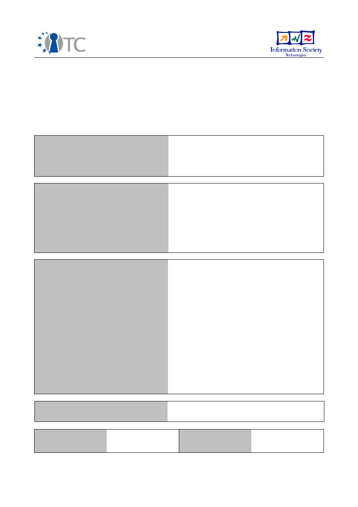
D03.1 Functionality specification and test plan
for all System Interface stacks; TSS
implementation done and test report
Project number
IST-027635
Project acronym
Open_TC
Project title
Open Trusted Computing
Deliverable type
Report
Deliverable reference number
IST-027635/D03.1/V1.0 Final
Deliverable title
Functionality specification and test plan for
all System Interface stacks; TSS
implementation done and test report
WP contributing to the deliverable
WP3
Due date
Postponed from M18 to M21 as officially
requested
Actual submission date
July 31
st
, 2007
Responsible Organisation
IFX
Authors
Hans Brandl (IFX)
Abstract
The main specification of the TCG defines a
subsystem with protected storage and trust
capabilities: The Trusted Platform Module
(TPM). For translating the low level
functionality for the TPM security chip to a
high level API, the TCG standardized the so
called TPM Software Stack (TSS). Within this
deliverable a TSS was implemented
according of the TSS1.2 specification of the
TCG. This report describes the method of
implementation and also the test procedures
during the development process as well as a
third party test of the finished product.
Keywords
TPM, TSS, TSPI, TCG, Trust, Security, Tes
Dissemination level
Public
Revision
V1.0 Final
Instrument
IP
Start date of the
project
1
st
November 2005
Thematic Priority
IST
Duration
42 months
TPM Software Stack (TSS) Implementation and Test Report
V1.0 Final
If you need further information, please visit our website
www.opentc.net
or contact
the coordinator:
Technikon Forschungs-und Planungsgesellschaft mbH
Richard-Wagner-Strasse 7, 9500 Villach, AUSTRIA
Tel.+43 4242 23355 –0
Fax. +43 4242 23355 –77
Email
coordination@opentc.net
The information in this document is provided “as is”, and no guarantee
or warranty is given that the information is fit for any particular purpose.
The user thereof uses the information at its sole risk and liability.
Open_TC Deliverable 03.1
2/53

TPM Software Stack (TSS) Implementation and Test Report
V1.0 Final
Table of Contents
1 Introduction .............................................................................................................. 7
1.1 TPM Management Interface.................................................................................... 8
1.2 Description of work:............................................................................................... 9
1.2.1 Development of a test environment for the TSS stack..................................... 9
1.3 SW-design Fundamentals..................................................................................... 10
1.3.1 References....................................................................................................... 10
1.3.2 Definitions of terms, Acronyms and abbreviations.......................................... 10
2 TSS Architecture...................................................................................................... 12
2.1 TSP and TSPI......................................................................................................... 12
2.2 TCS and TCSI........................................................................................................ 13
2.3 TDDL and TDDLI................................................................................................... 13
2.4 Maintainability, Portability and Usability Requirements....................................... 14
3 TCG-API.................................................................................................................... 15
3.1 Function list for the OpenTC TCG-TSS.................................................................. 15
3.1.1 List of supported TSS Core Service Interface Functions...................................15
3.2 Function list for the OpenTC TCG-TSS.................................................................. 18
3.2.1 Supported function list of TSS Service Provider............................................... 18
3.2.2 List of supported TSS Core Service Interface Functions...................................21
4 TSS module architectural overview .........................................................................24
4.1 TCG-TSP architectural building blocks.................................................................. 24
4.2 TCG-TCS architectural building blocks..................................................................27
5 OpenTC development environment configuration and requirements...................... 30
5.1 Eclipse.................................................................................................................. 30
5.2 Version Control System........................................................................................ 30
5.3 Change- / Error-Managementsystem.................................................................... 30
6 Installation Procedure for the TSS............................................................................ 31
7 Test and Evaluation Support Programs.................................................................... 37
8 Test Procedures for the Development Phase.......................................................... 40
8.1 Glossary of Terms................................................................................................ 40
8.2 Test environment................................................................................................. 40
8.2.1 Security Platform:............................................................................................ 40
8.2.2 External/existing modules for Security Platform:............................................. 40
8.2.3 Test environments for different test methods ................................................ 41
8.2.4 PHP –interface for browser supported testing.................................................. 41
8.2.5 Ruby test environment interpreter for automatic test sequencing.................. 41
8.3 Tracing and Protocol.............................................................................................42
8.4 Test Development................................................................................................ 42
8.4.1 Formal Requirements for the Test Plan........................................................... 42
8.4.2 Formal Requirements for the Test Scripts....................................................... 42
8.5 General Requirements for the Test Scripts...........................................................43
8.5.1 Hints for test script development.................................................................... 43
8.6 Guidelines for Test Development......................................................................... 43
8.7 Helper functions................................................................................................... 44
8.7.1 Defined helper functions:.................................................................................44
8.8 Scripting library.................................................................................................... 44
8.9 Provoking Fault cases........................................................................................... 44
8.1 0Running and Exercising the Tests...................................................................... 45
8.10. 1Test coverage................................................................................................ 45
Open_TC Deliverable 03.1
3/53

TPM Software Stack (TSS) Implementation and Test Report
V1.0 Final
8.1 1Presentation of Test Results............................................................................... 45
9 Test management environment based on the script language RUBY...................... 49
9.1 Motivation and execution..................................................................................... 49
9.2 Requirements for run time environment............................................................. 49
9.2.1 The Ruby Interpreter...................................................................................... 49
9.2.2 Writing test scripts..........................................................................................50
1 0 Testing by third parties inside the OpenTC project............................................... 51
1 1 TPM Controller: TPM Management and Control SW package................................ 54
11. 1 Preconditions..................................................................................................... 54
11. 2 Build & Run....................................................................................................... 54
Open_TC Deliverable 03.1
4/53

TPM Software Stack (TSS) Implementation and Test Report
V1.0 Final
List of figures
Figure 1: TSS-Stack as defined by the TCG....................................................................7
Figure 2: TPM Software Stack Structure...................................................................... 12
Figure 3: Basic architecture building blocks for TCG TSS Service-provider................. 24
Figure 4: Basic architecture building blocks for TCG TSS CORE Service...................... 27
Figure 5: Test process overview.................................................................................. 51
Figure 6: SOAP transport level hooking....................................................................... 53
Open_TC Deliverable 03.1
5/53

TPM Software Stack (TSS) Implementation and Test Report
V1.0 Final
List of Tables
Table 1: List of abbreviations and terms used for specification and definition............ 11
Table 2: TSS Core Service Function as specified by TCG............................................. 17
Table 3: TSS Service Provider Function as specified by TCG....................................... 20
Table 4: TSS Core Service Function as specified by TCG............................................ 23
Open_TC Deliverable 03.1
6/53
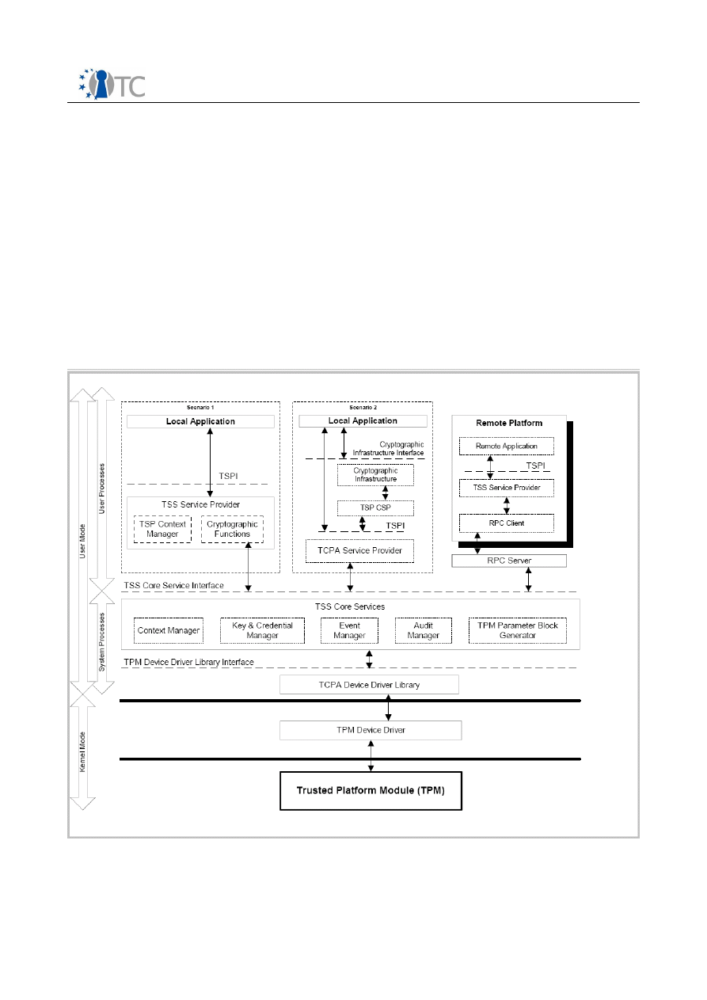
TPM Software Stack (TSS) Implementation and Test Report
V1.0 Final
1
Introduction
The main specification of the TCG defines a subsystem with protected storage and
trust capabilities: This subsystem is the Trusted Platform Module (TPM). Since the TPM
is both a subsystem intended to provide trust and be an inexpensive component,
resources within it are restricted. This narrowing of the resources, while making the
security properties easier and cheaper to build and verify, causes to the interfaces and
capabilities to be cumbersome. The TCG architecture has solved this by separating the
functions requiring the protected storage and capabilities from the functions that do
not; putting those that do not into the platform’s main processor and memory space
where processing power and storage exceed that of the TPM. The modules and
components that provide this supporting functionality comprise the TPM Software
Stack (TSS) .
Figure 1: TSS-Stack as defined by the TCG
Open_TC Deliverable 03.1
7/53
TPM Software Stack (TSS) Implementation and Test Report
V1.0 Final
Due to its special role, as the central trust API to the trusted hardware (TPM) it will be
used as trust API for the operating system as well as for the applications.
The TSS definition is publicly available at the TCGs website as newest version 1.2
www.trustedcomputing.org
. The old and first version of this stack V1.0 has been
already implemented by IFX for Windows machines in year 2003. As since this first
implementation a lot of new findings and experiences for the TSS came up, the TCG
TSS work group created the current follow on version1.2 of the standard in the periode
of year 2005 to 2006.
Within this project an intensive cooperation with the TCG TSS WG was executed and in
parallel to the work on the TCG standard also this implementation was done. There
where a lot of benefits for the standardisation work group, because the
implementation results where immediately fed back and on the other hand this
implementation became the newest and most up to date one which is currently
available (The 1.2 standard is now public since march 2007 and nearly at the same
time the first beta prototype of this TSS was ready).
For implementation efficiency we tried to use as much as possible code from the old
Windows version. However some of the functions had to be programmed fully new,
because of the different interfacing to Win and Linux (especially low level kernel
functions ) and nearly all code had to be modified either due to the conversion to
Linux but also because of major changes in the standard from version 1.0 to 1.2.
The TSS1.2 specification, which was considered, has a volume of 757 pages.
The final amount of code for this TSS1.2 implementation reached about 95 KLoc.
For testing purposes we added another 25 KLoc of example programs , which use the
stack features.
The complete packetsize of the current TSS implementation is about 4 Mbytes.
The implementation was done on Linux distribution SUSE 10.0 to 10.2 as this is the
standard Linux version for the OpenTC project.
The whole package is available at the OpenTC server and can be downloaded and
compiled at the users target machine. All necessary command and control files (MAKE)
are enclosed to allow an easy integration.
As we found out in contact with potential users, that a local compilation could rise
problems for not much experienced users, we also added precompiled binary versions
which could much more easily installed.
1.1 TPM Management Interface
For managing and controlling the TPM (below the TSS) within WP5 a specific TPM
Control package has been specified and developed. With the functionality from this
package all main TPM management operations can be executed and the status of the
TPM can be analyzed. The functionality is basically described in chapter 11,
the detailed description and code can be found in the results from WP5d and the
respective delivery. It is described here shortly because it has been developed
together with this TSS and can be used for doing some early tests and starting getting
experience with handling the TPM.
Open_TC Deliverable 03.1
8/53
TPM Software Stack (TSS) Implementation and Test Report
V1.0 Final
1.2 Description of work:
o
The TSS stack has been developed with all mandatory functions acording to the
TCG TSS specifications and is now worldwide the first 1.2 version ready for use.
There are certain functions, which are not required for practical use or which are
still in discussion. For sake of clarity we have in accordance with TCG good practice
not implemented these features until final settling of standardisation work will
occur.
o
A specific Linux based testbed and testprograms have been developed and the
stack has been tested by this environment.
o
The complete package (including source code, make files, environment
infrastructure etc.) is available at the OpenTC svn server for use and feedback by
the project partners.
1.2.1 Development of a test environment for the TSS stack
Motivation and execution
For a full coverage of the functionality and behaviour tests of the Linux TSS stack
within the OpenTC project, we used two different test methods during development
and implementations.
In addition to the PHP based test interface, which has advantages for manual testing
and fast generation of result reports, we used also the well known RUBY environment
for testing.
Small and compact code sequences are generated in the target programming
language C as well as for the test environment based on the RUBY script language
which use only small and compact functional of the TSS service provider. With such
high granularity tests we will minimize the risk to ignore errors within the execution
protocols. From the point of the Service provider (SP) both methods look nearly
identical, because the complementary test process is either an executable program or
an shared object from the universal test environment.
This run time library is following certain stringent rules, for allowing the RUBY
interpreter to feed through and converting the script calls of the ruby interpreter.
Amongst the many available script languages for Linux, Ruby has been selected,
because this language is consequently object oriented , the scripts are easily to read
and the generation of a linkage library to connect to the TSS SP is very much
supported by automatic code generation means.
Formal Requirements for the Test Scripts
To achieve a certain homogeneousness of the test scripts independent on the
developer and to allow for an automated checking of the test results, the following
rules shall be followed.
The name of a test script include the unique identifier of the test case it implements. It
Open_TC Deliverable 03.1
9/53
TPM Software Stack (TSS) Implementation and Test Report
V1.0 Final
shall be obvious from the script’s name, which test case it realizes.
Each standalone script releases all variables by means of a instruction before
terminating so that various standalone scripts can be invoked by means of include
instructions by a master script.
Guidelines for Test Development
Identify a test subject
Insert a sub chapter into chapter TSPI of this document
Write a short description of the test subject
Develop the test scripts according to the table in the test plan. Usually, one test
script will contain one test case.
Fault test cases usually contain more than one test case in each row and each
test script.
Debug the test scripts with the help of the Scripting Debug Tool.
1.3 SW-design Fundamentals
1.3.1 References
TCG TPM Specification Version 1.2 Revision 103
https://www.trustedcomputinggroup.org
Specification Version 1.2
Level 2 Revision 103, 9 July 2007
TCG Specification Architecture Overview
https://www.trustedcomputinggroup.org
Specification Revision 1.3, 28th March 2007
TCG Software Stack (TSS)
https://www.trustedcomputinggroup.org
Specification Version 1.2, Level 1, Errata A, Part1: Commands and Structures,
March 7, 2007
1.3.2 Definitions of terms, Acronyms and abbreviations
Listing of term definitions and abbreviations which are important for understanding
the architectural design specification (IT expressions and terms from the application
domain) - irrespective of whether these have already been explained in a different
document (e.g. software requirements specification).
Open_TC Deliverable 03.1
10/53
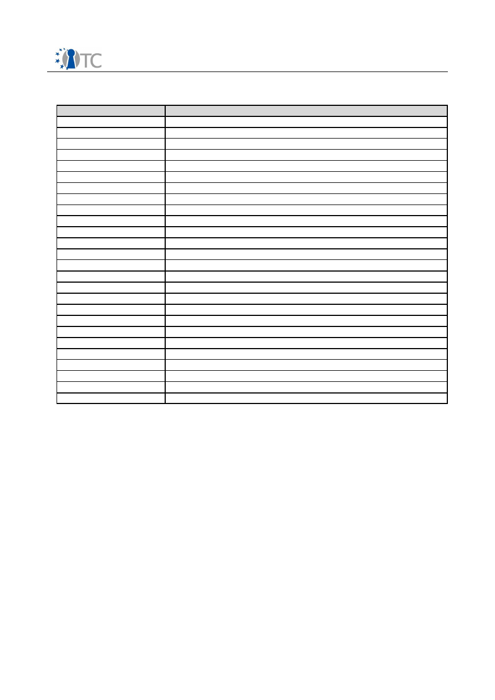
TPM Software Stack (TSS) Implementation and Test Report
V1.0 Final
Abbreviation
Explanation
ACRYL
Advanced Cryptographic Library
API
Application Programming Interface
ODBC
Open Database Connectivity
PC
Personal Computer
SDK
Software Development Kit
SW
Software
TSP
TCG Service Provider
TSPI
TSP-Interface
TCS
TCG Core Service
TCSI
TCG-Interface
TDDL
TCG-Device Driver Library
TDDLI
TDDL-Interface
TPM
Trusted Platform Module
TSS
TCG-Software-Stack
TSS-SDK
TSS-Software-Development-Kit
GUID
Globally Unique Identifier (a 128-bit value)
XML
Extensible Markup Language
DOM
Document Object Model
COM
Component Object Mode
DCOM
Distributed Component Object Mode
IDL
Interface Definition Language
MIDL
Microsoft® Interface Definition Language
BUK
Basic User Key
TCG
Trusted Computing Group
SOAP
Simple Object Access Protocol
HTTP
Hypertext Transfer Protocol
Table 1: List of abbreviations and terms used for specification and definition
Open_TC Deliverable 03.1
11/53
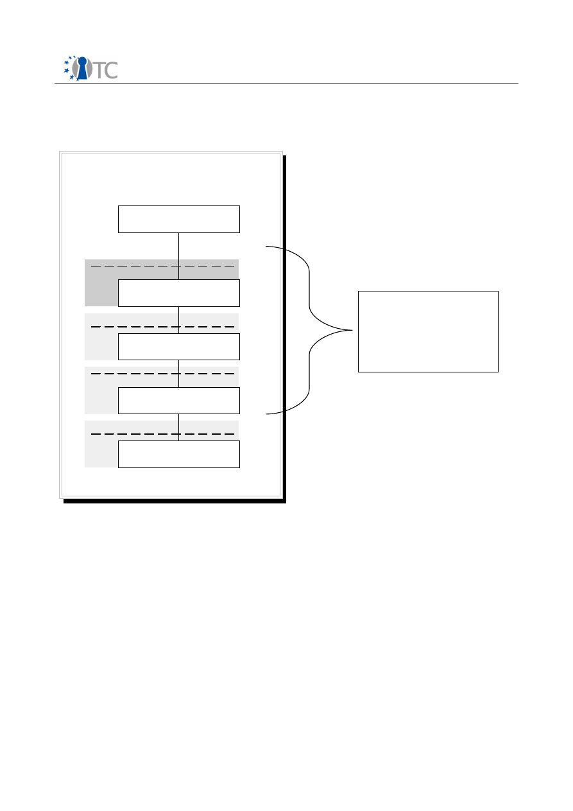
TPM Software Stack (TSS) Implementation and Test Report
V1.0 Final
2
TSS Architecture
TCG Service Provider
TCG Core Service
TCG Device Driver Library
TPM
TPM Interface
TPM Device Driver
Library Interface
TCG Core Service Interface
TCG Service Provider
Interface
TCPA Application
Figure 2: TPM Software Stack Structure
IFX-TSS modules considerations and inspection
2.1 TSP and TSPI
This module provides TCG services for applications. It provides the high-level TCG
functions allowing applications to focus on their specialty while relying on the TSP to
perform most of the trusted functions provided by the TPM. This module also provides
a small number of auxiliary functions for convenience not provided by the TPM such as
hashing.
In environments that provide layers of protections (i.e., rings) or separation of
applications into processes, this module is intended to reside within the same ring and
process as the application. There will likely be one TSP per application. On operating
systems that provide multiple processes, there may be multiple TSP’s residing on the
Open_TC Deliverable 03.1
12/53
TSS modules
covered by the
related TCG
specification.

TPM Software Stack (TSS) Implementation and Test Report
V1.0 Final
platform.
2.2 TCS and TCSI
A service provider is any component used by the application that allows that
application access to the TCS (and thus the TPM) from within the application’s process.
Service providers, of which the TSP is but one possible instantiation, cannot
communicate directly with the TPM. Additionally, there are multiple common services
that either must or should be shared among the set of the platform’s service
providers.
The TCG Core Services (TCS) provides a common set of services per platform for all
service providers. Since the TPM is not required to be multithreaded, it provides
threaded access to the TPM. The TCS MUST provide single threaded access to the TPM
and is an out of process system service.
2.3 TDDL and TDDLI
The TCG Device Driver Library (TDDL) is an intermediate module that exists between
the TCS and the kernel mode TPM Device Driver (TDD). The TDDL provides a user
mode interface. Such an interface has several advantages over a kernel mode driver
interface:
•
It ensures different implementations of the TSS properly communicate with any
TPM.
•
It provides an OS-independent interface for TPM applications.
•
It allows the TPM vendor to provide a software TPM simulator as a user mode
component.
Because the TPM is not required to be multithreaded, the TDDL is to be a single-
instance, single threaded module. The TDDL expects the TPM command serialization
to be performed by the TCS.
The TPM vendor is responsible for defining the interface between the TDDL and the
TDD. The TPM vendor can choose the communication and resource allocation
mechanisms between this library and any kernel mode TPM device driver or software
TPM simulator.
This module will be totally removed from the Infineon Technologies TSS package if it is
part of the OS distribution (e.g. Linux) for OpenTC. In the meantime we will implement
the basic functionality for this module to interact with the TPM device.
Open_TC Deliverable 03.1
13/53

TPM Software Stack (TSS) Implementation and Test Report
V1.0 Final
2.4 Maintainability, Portability and Usability Requirements
The Security Platform requires the Infineon TPM SLB9635TT1.2 be setup properly with
the TPM 1.2 firmware V1.00 or higher.
Generally Infineon provides a firmware update possibility via a tool based on the TCPA
field upgrade approach which will be deployed by means comparable to driver
updates.
Open_TC Deliverable 03.1
14/53
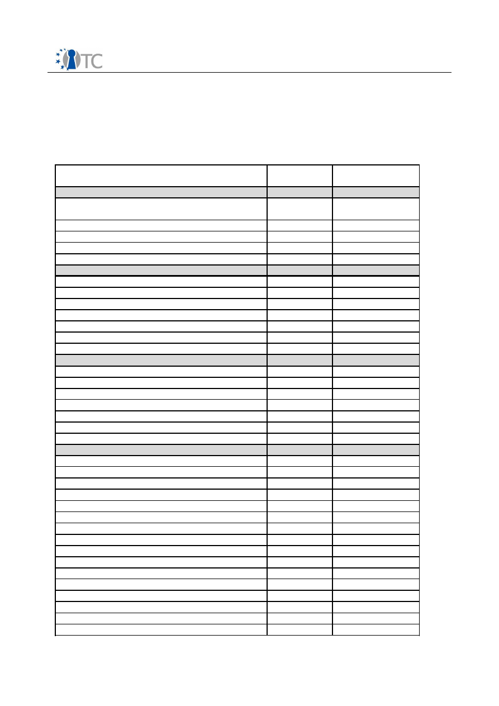
TPM Software Stack (TSS) Implementation and Test Report
V1.0 Final
3
TCG-API
3.1 Function list for the OpenTC TCG-TSS
3.1.1 List of supported TSS Core Service Interface Functions
TSS Core Service Function as specified
by TCG
Solution-
Supported
Not Supported
Context related
Core Service functionality covered by
DCOM
X
TCS_OpenContext
(x)
TCS_CloseContext
(x)
TCS_FreeMemory
(x)
TCS_GetCapability
0
Persistent Storage related
TCSP_LoadKeyByUUID
O
TCS_RegisterKey
X
TCSP_UnregisterKey
X
TCS_EnumRegisteredKeys
X
TCS_GetRegisteredKey
O
TCS_GetRegisteredKeyBlob
X
TCSP_GetRegisteredKeyByPublicInfo
X
Authorization related
TCSP_OIAP
X
TCSP_OSAP
X
TCSP_TerminateHandle
X
TCSP_ChangeAuth
X
TCSP_ChangeAuthOwner
X
TCSP_ChangeAuthAsymStart
X
TCSP_ChangeAuthAsymFinish
X
TPM related
TCSP_CreateEndorsementKey
X
TCSP_ReadPubek
X
TCSP_OwnerReadPubek
X
TCSP_OwnerReadInternalPub
X
TCSP_TakeOwnership
X
TCSP_OwnerClear
X
TCSP_ForceClear
X
TCSP_DisableOwnerClear
X
TCSP_DisableForceClear
X
TCSP_OwnerSetDisable
X
TCSP_PhysicalDisable
X
TCSP_PhysicalEnable
X
TCSP_PhysicalSetDeactivated
X
TCSP_SetTempDeactivated
X
TCSP_SetOwnerInstall
X
TCSP_DisablePubekRead
X
Open_TC Deliverable 03.1
15/53
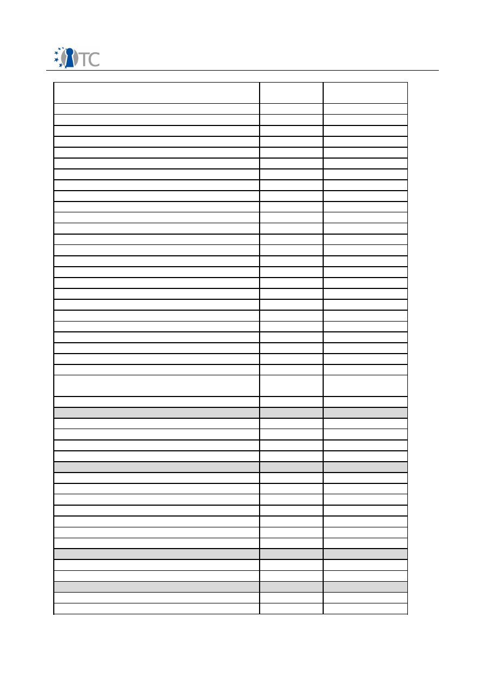
TPM Software Stack (TSS) Implementation and Test Report
V1.0 Final
TSS Core Service Function as specified
by TCG
Solution-
Supported
Not Supported
TCSP_GetCapabilityOwner
X
TCSP_SelfTestFull
X
TCSP_CertifySelfTest
X
TCSP_GetTestResult
X
TCSP_GetCapability
X
TCSP_GetCapabilitySigned
TCSP_CreateMaintenanceArchive
X(1)
TCSP_LoadMaintenanceArchive
X(1)
TCSP_KillMaintenanceFeature
X(1)
TCSP_LoadManuMaintPub
X(1)
TCSP_ReadManuMaintPub
X(1)
TCSP_FieldUpgrade
X
TCSP_SetRedirection
X(1)
TCSP_GetRandom
X
TCSP_StirRandom
X
TCSP_Quote
X
TCSP_Extend
X
TCSP_PcrRead
X
TCSP_DirWriteAuth
X
TCSP_DirRead
X
TCSP_SetCapability
O
TCSP_FlushSpecific
X
TCSP_ResetLockValue
X
TCSP_OwnerReadInternalPub
X
TCSP_KeyControlOwner
X
TCSP_CreateRevocableEndorsementKeyPai
r
X
TCSP_RevokeEndorsementKeyPair
X
PCREvent related
TCS_GetPcrEvent
X
TCS_GetPcrEventsByPcr
X
TCS_GetPcrEventLog
X
TCS_LogPcrEvent
X
Key related
TCSP_EvictKey
X
TCSP_LoadKeyByBlob
X
TCSP_GetPubkey
X
TCSP_CertifyKey
X
TCSP_CreateWrapKey
X
TCSP_LoadKey2ByBlob
X
TCSP_MigrateKey
X
AIK related
TCSP_MakeIdentity
X
TCSP_ActivateIdentity
X
Migration related
TCSP_AuthorizeMigrationKey
X
TCSP_CreateMigrationBlob
X
Open_TC Deliverable 03.1
16/53
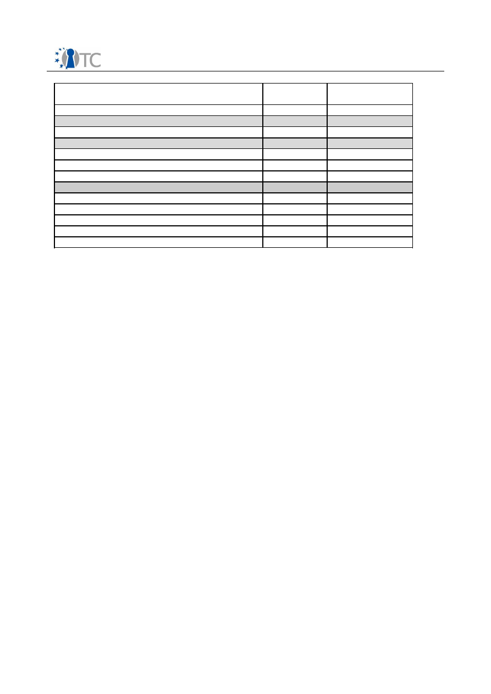
TPM Software Stack (TSS) Implementation and Test Report
V1.0 Final
TSS Core Service Function as specified
by TCG
Solution-
Supported
Not Supported
TCSP_ConvertMigrationBlob
X
Hash related
TCSP_Sign
X
Data related
TCSP_Unbind
X
TCSP_Seal
X
TCSP_Unseal
X
NV related
Tcsip_NV_DefineOrReleaseSpace
X
Tcsip_NV_WriteValue
X
Tcsip_NV_WriteValueAuth
X
Tcsip_NV_ReadValue
X
Tcsip_NV_ReadValueAuth
X
O
The implementation doesn’t support all possible parameter features as described
by TCG
(X) This function is implicitly supported through the COM interface technology
X(1) Optional TPM commands according to TCG Main Specification
X(2) The support of these commands has a high priority for the next release
Table 2: TSS Core Service Function as specified by TCG
Open_TC Deliverable 03.1
17/53
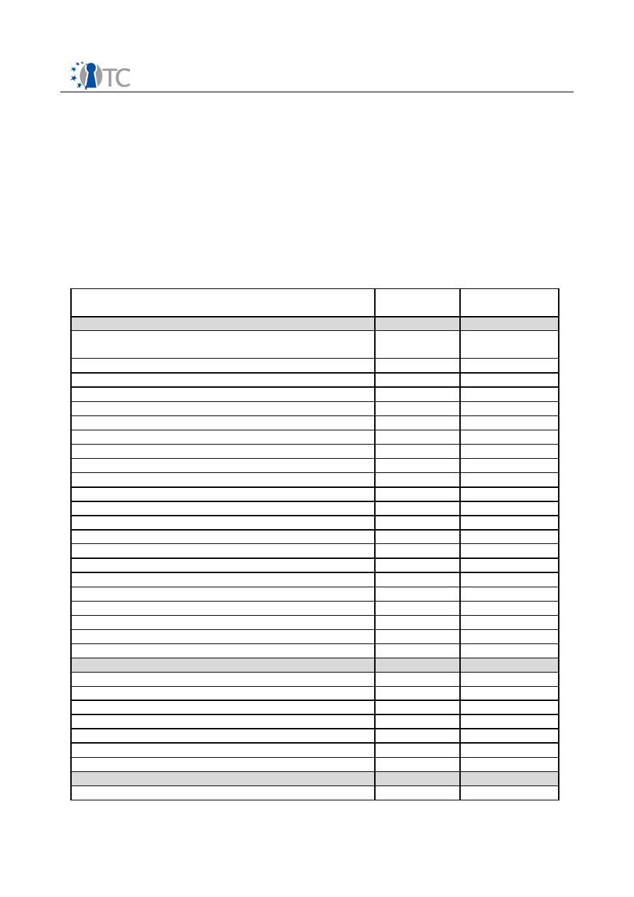
TPM Software Stack (TSS) Implementation and Test Report
V1.0 Final
3.2 Function list for the OpenTC TCG-TSS
For the OpenTC development/porting of the Infineon TCG-TSS the intention is to
separate this into some iteration step. Iterations should be organized that it is
possibility to offer a delivery to the OpenTC project as early as possible.
Currently the functionality for DAA and CMK are not included in the development plan;
due to the fact that there is no use case in the OpenTC project which addresses these
functions and also use scenarios outside the OpenTC are not known.
3.2.1 Supported function list of TSS Service Provider
TSS Service Provider Function as specified
by TCG
Step-1
Supported
Step-2
Supported
Context related
Service Provider functionality covered by
(D)COM
Tspi_Context_Create
X
Tspi_Context_Close
X
Tspi_Context_FreeMemory
X
Tspi_SetAttribUint32
O
O
Tspi_GetAttribUint32
O
O
Tspi_SetAttribData
Tspi_GetAttribData
Tspi_Context_Connect
X
Tspi_Context_GetDefaultPolicy
X
Tspi_Context_CreateObject
O
O
Tspi_Context_CloseObject
X
Tspi_Context_GetCapability
O
O
Tspi_Context_GetTPMObject
X
Tspi_Context_LoadKeyByBlob
X
Tspi_Context_LoadKeyByUUID
O
O
Tspi_Context_RegisterKey
O
Tspi_Context_UnregisterKey
O
Tspi_Context_DeleteKeyByUUID
Tspi_Context_GetKeyByUUID
O
Tspi_Context_GetKeyByPublicInfo
Tspi_Context_GetRegisteredKeysByUUID
Policy related
Tspi_SetAttribUint32
Tspi_GetAttribUint32
Tspi_SetAttribData
Tspi_GetAttribData
Tspi_Policy_SetSecret
O
Tspi_Policy_FlushSecret
X
Tspi_Policy_AssignToObject
X
TPM related
Tspi_SetAttribUint32
O
O
Open_TC Deliverable 03.1
18/53
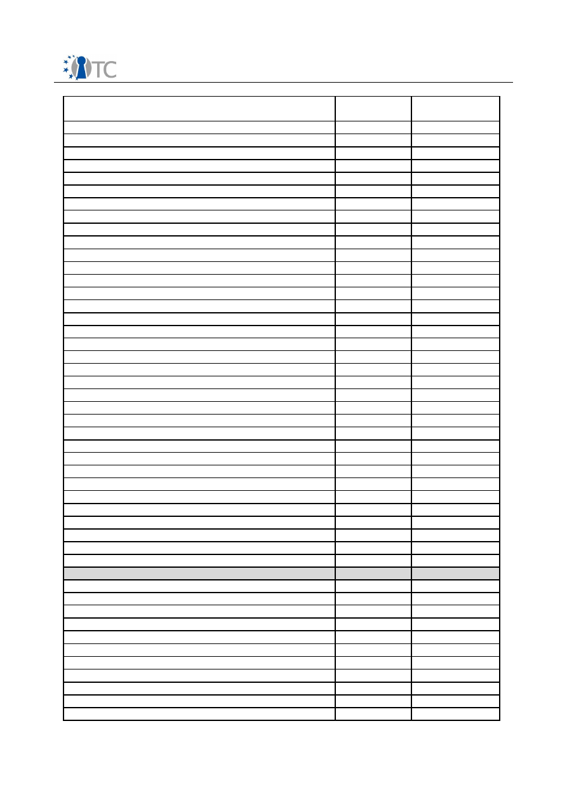
TPM Software Stack (TSS) Implementation and Test Report
V1.0 Final
TSS Service Provider Function as specified
by TCG
Step-1
Supported
Step-2
Supported
Tspi_GetAttribUint32
O
O
Tspi_SetAttribData
O
O
Tspi_GetAttribData
O
O
Tspi_TPM_CreateEndorsementKey
Tspi_TPM_GetPubEndorsementKey
Tspi_TPM_TakeOwnership
X
Tspi_TPM_CollateIdentityRequest
O
Tspi_TPM_ActivateIdentity
O
Tspi_TPM_ClearOwner
X
Tspi_TPM_SetStatus
O
Tspi_TPM_GetStatus
O
Tspi_TPM_SelfTestFull
Tspi_TPM_CertifySelfTest
O
Tspi_TPM_GetTestResult
X
Tspi_TPM_GetCapability
O
Tspi_TPM_GetCapabilitySigned
Tspi_TPM_CreateMaintenanceArchive
Tspi_TPM_LoadMaintenanceArchive
Tspi_TPM_KillMaintenanceFeature
Tspi_TPM_LoadMaintenancePubKey
Tspi_TPM_CheckMaintenancePubKey
Tspi_TPM_SetRedirection
Tspi_TPM_GetRandom
X
Tspi_TPM_StirRandom
X
Tspi_TPM_AuthorizeMigrationTicket
Tspi_TPM_GetEvent
Tspi_TPM_GetEvents
Tspi_TPM_GetEventLog
Tspi_TPM_Quote
O
Tspi_TPM_PcrExtend
O
O
Tspi_TPM_PcrRead
X
X
Tspi_TPM_DirWrite
Tspi_TPM_DirRead
Tspi_ChangeAuth
X
Tspi_GetPolicyObject
X
Key related
Tspi_SetAttribUint32
O
O
Tspi_GetAttribUint32
O
O
Tspi_SetAttribData
O
O
Tspi_GetAttribData
O
O
Tspi_Key_LoadKey
X
Tspi_Key_GetPubKey
X
Tspi_Key_CertifyKey
X
Tspi_Key_CreateKey
O
O
Tspi_Key_WrapKey
Tspi_Key_CreateMigrationBlob
O
Tspi_Key_ConvertMigrationBlob
O
Open_TC Deliverable 03.1
19/53
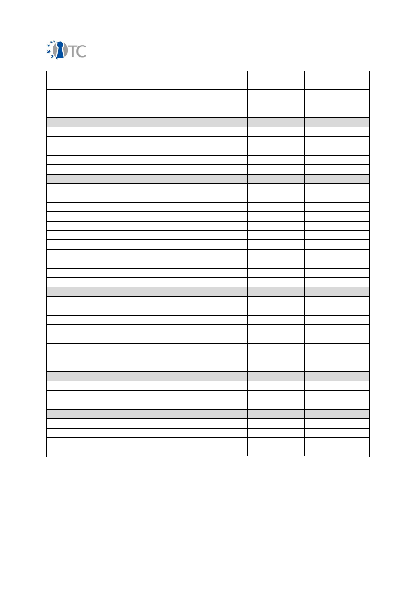
TPM Software Stack (TSS) Implementation and Test Report
V1.0 Final
TSS Service Provider Function as specified
by TCG
Step-1
Supported
Step-2
Supported
Tspi_ChangeAuth
X
Tspi_ChangeAuthAsym
Tspi_GetPolicyObject
X
Hash related
Tspi_Hash_Sign
X
Tspi_Hash_VerifySignature
O
Tspi_Hash_SetHashValue
O
Tspi_Hash_GetHashValue
O
Tspi_Hash_UpdateHashValue
Data related
Tspi_SetAttribUint32
Tspi_GetAttribUint32
Tspi_SetAttribData
O
Tspi_GetAttribData
O
Tspi_Data_Bind
Tspi_Data_Unbind
Tspi_Data_Seal
X
Tspi_Data_Unseal
X
Tspi_ChangeAuth
X
Tspi_ChangeAuthAsym
Tspi_GetPolicyObject
X
NV related
Tspi_SetAttribUint32
O
Tspi_GetAttribUint32
O
Tspi_SetAttribData
Tspi_GetAttribData
O
Tspi_NV_DefineSpace
Tspi_NV_ReleaseSpace
Tspi_NV_WriteValue
X
Tspi_NV_ReadValue
PcrComposite related
Tspi_PcrComposite_SelectPcrIndex
X
Tspi_PcrComosite_SetPcrValue
X
Tspi_PcrComposite_GetPcrValue
X
Callback Function Definitions
Tspip_CallbackHMACAuth
Tspip_CallbackXorEnc
X
Tspip_CallbackTakeOwnership
Tspip_CallbackChangeAuthAsym
O The implementation doesn’t support all possible parameter features as described
by TCG
Table 3: TSS Service Provider Function as specified by TCG
Open_TC Deliverable 03.1
20/53
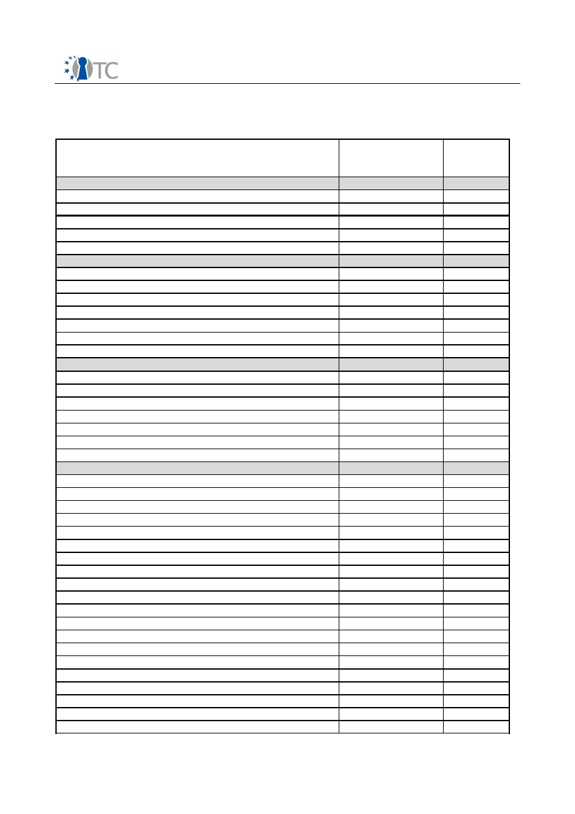
TPM Software Stack (TSS) Implementation and Test Report
V1.0 Final
3.2.2 List of supported TSS Core Service Interface Functions
TSS Core Service Function as specified by
TCG
Step-1
Supported
Step-2
Supporte
d
Context related
Core Service functionality covered by DCOM
TCS_OpenContext
X
TCS_CloseContext
X
TCS_FreeMemory
X
TCS_GetCapability
O
O
Persistent Storage related
TCSP_LoadKeyByUUID
O
TCS_RegisterKey
O
TCSP_UnregisterKey
O
TCS_EnumRegisteredKeys
TCS_GetRegisteredKey
O
TCS_GetRegisteredKeyBlob
O
TCSP_GetRegisteredKeyByPublicInfo
Authorization related
TCSP_OIAP
X
TCSP_OSAP
X
TCSP_TerminateHandle
X
TCSP_ChangeAuth
X
TCSP_ChangeAuthOwner
X
TCSP_ChangeAuthAsymStart
TCSP_ChangeAuthAsymFinish
TPM related
TCSP_CreateEndorsementKey
TCSP_ReadPubek
X
TCSP_OwnerReadPubek
X
TCSP_OwnerReadInternalPub
X
TCSP_TakeOwnership
X
TCSP_OwnerClear
X
TCSP_ForceClear
X
TCSP_DisableOwnerClear
TCSP_DisableForceClear
TCSP_OwnerSetDisable
TCSP_PhysicalDisable
X
TCSP_PhysicalEnable
X
TCSP_PhysicalSetDeactivated
X
X
TCSP_SetTempDeactivated
X
TCSP_SetOwnerInstall
X
TCSP_DisablePubekRead
TCSP_GetCapabilityOwner
TCSP_SelfTestFull
X
TCSP_CertifySelfTest
TCSP_GetTestResult
Open_TC Deliverable 03.1
21/53
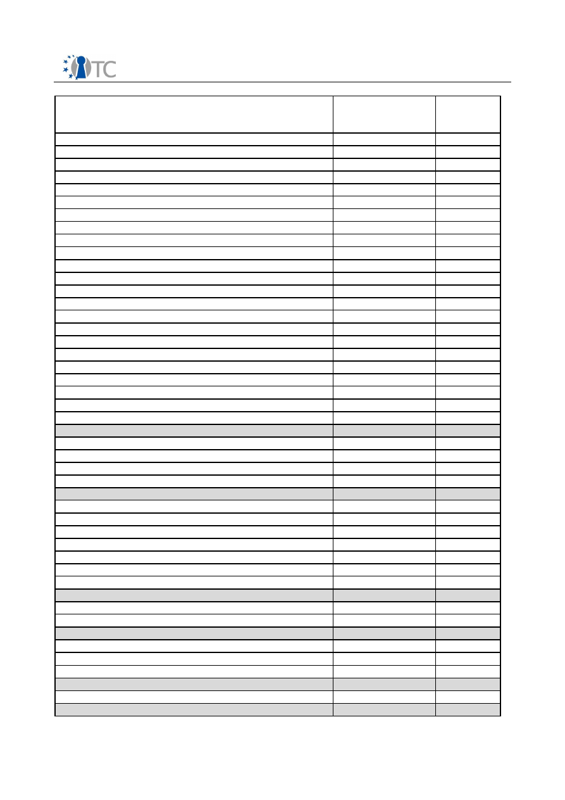
TPM Software Stack (TSS) Implementation and Test Report
V1.0 Final
TSS Core Service Function as specified by
TCG
Step-1
Supported
Step-2
Supporte
d
TCSP_GetCapability
O
O
TCSP_GetCapabilitySigned
TCSP_CreateMaintenanceArchive
TCSP_LoadMaintenanceArchive
TCSP_KillMaintenanceFeature
TCSP_LoadManuMaintPub
TCSP_ReadManuMaintPub
TCSP_FieldUpgrade
X
TCSP_SetRedirection
TCSP_GetRandom
X
TCSP_StirRandom
TCSP_Quote
X
TCSP_Extend
X
TCSP_PcrRead
X
TCSP_DirWriteAuth
TCSP_DirRead
TCSP_SetCapability
O
TCSP_FlushSpecific
X
TCSP_ResetLockValue
TCSP_OwnerReadInternalPub
X
TCSP_KeyControlOwner
TCSP_CreateRevocableEndorsementKeyPair
TCSP_RevokeEndorsementKeyPair
PCREvent related
TCS_GetPcrEvent
TCS_GetPcrEventsByPcr
TCS_GetPcrEventLog
TCS_LogPcrEvent
Key related
TCSP_EvictKey
X
TCSP_LoadKeyByBlob
X
TCSP_GetPubkey
X
TCSP_CertifyKey
TCSP_CreateWrapKey
X
TCSP_LoadKey2ByBlob
TCSP_MigrateKey
AIK related
TCSP_MakeIdentity
X
TCSP_ActivateIdentity
X
Migration related
TCSP_AuthorizeMigrationKey
TCSP_CreateMigrationBlob
TCSP_ConvertMigrationBlob
Hash related
TCSP_Sign
X
Data related
Open_TC Deliverable 03.1
22/53
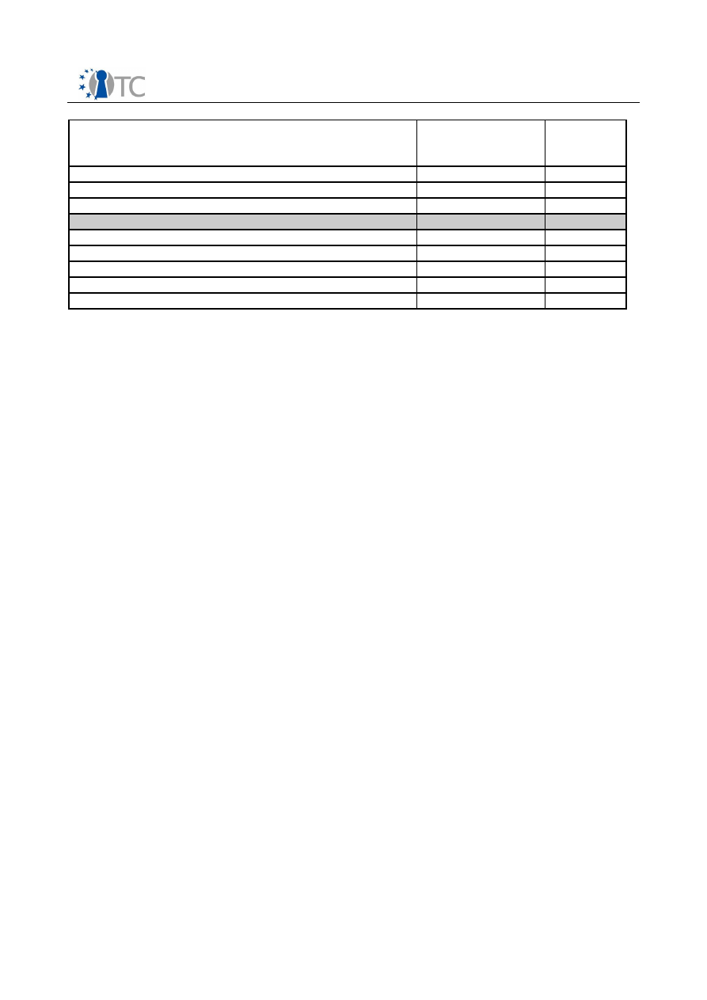
TPM Software Stack (TSS) Implementation and Test Report
V1.0 Final
TSS Core Service Function as specified by
TCG
Step-1
Supported
Step-2
Supporte
d
TCSP_Unbind
X
TCSP_Seal
X
TCSP_Unseal
X
NV related
Tcsip_NV_DefineOrReleaseSpace
Tcsip_NV_WriteValue
Tcsip_NV_WriteValueAuth
Tcsip_NV_ReadValue
Tcsip_NV_ReadValueAuth
O
The implementation doesn’t support all possible parameter features as described
by TCG
Table 4: TSS Core Service Function as specified by TCG
Open_TC Deliverable 03.1
23/53
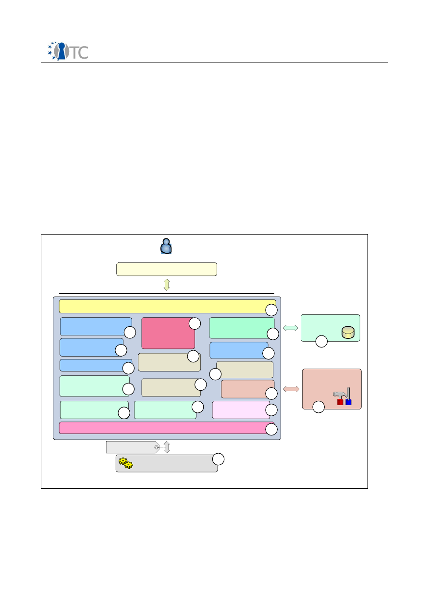
TPM Software Stack (TSS) Implementation and Test Report
V1.0 Final
4
TSS module architectural overview
4.1 TCG-TSP architectural building blocks
This module provides TCG services for applications. It delivers the high-level TCG
functions allowing applications to focus on their specialty while relying on the TSP to
perform most of the trusted functions provided by the TPM. This module also provides
a small number of auxiliary functions for convenience not provided by the TPM such as
signature verification.
In environments that provide layers of protections (i.e., rings) or separation of
applications into processes, this module is intended to reside within the same ring and
process as the application. There will likely be one TSP per application. On operating
systems that provide multiple processes, there may be multiple instances of TSP’s
running on the platform.
TCG-Aware-Application
Basic architectural building blocks for TCG -TSS-Service-Provide r
User
Crypto-Service-
Module
Persistent -Storage-
Access-Component
TCG-Core-Service-Access
TSP-Persistent -
Storage (user)
TCG-TSS-Core-Service
TSP-Interface -Layer (C-Interface)
1
Transport -Protection -
Helper
TSPI-Level
Crypto-Algorithm -
Support Module (e.g.
OpenSSL)
Secret-Memory-
Helper
Setting and Policy
Access
Streaming-Helper-
Classes
Error-Handling -Class
Synchronization -Helper-
Module
TSP-Module-
Management
TSP-Working-
Objects
Authorization -
Handling -Component
Auth-Session-
Handling
TSP-Context-
Organization
Common-Module-
Service
4
2
3
5
6
7
8
9
10
11
12
13
14
15
16
17
18
19
Local or remote
calling context.
TSP
Figure 3: Basic architecture building blocks for TCG TSS Service-provider
Open_TC Deliverable 03.1
24/53

TPM Software Stack (TSS) Implementation and Test Report
V1.0 Final
1. TSP-Interface-Layer (C-Interface)
Represents the TSPI of the TSS-Service-Provider and uses the C-Interface
notation. Includes the first object access abstraction layer; accomplishing the
object oriented nature of the TSP interface. Contains functionality to create and
release interface layer objects which are linked to the working layer.
2. TSP-Working-Objects
Collection of all TSP related productive objects (e.g. Key, EncData…). Act as a
kind of business workflow control for all TCG related transformations and
calculations. These operations are performed with assistance of the different
specialized support components and classes.
3. Synchronization-Helper-Module
Collection of some small helper classes; encapsulate the native system calls for
synchronization object handling.
4. Setting and Policy Access
Function and class pool to summarize operations used to access and validate
setting information.
5. Authorization-Handling-Component
Component contains the knowledge and TPM command parameter data for the
authorization data stream construction. This unit interacts with the TSP-Policy-
Class from the TSP-Working-Object and the Auth-Session-Handling module to
calculate the authorization (e.g. HMAC) data package. It interacts as a kind of
instrumentation factor for the TCG authorization flow.
6. Streaming-Helper-Classes
Helper classes transform TCG structures into BYTE-Stream-Representation and
verse versa.
7. Persistent-Storage-Access-Component
Component covers the physical access and representation of the TSP persistent
storage representation. The TSS specification separates the storage context into
a per user boundary and in a system linked one. This functionality and the data
representation reflect a TSS (i.e. TSP and TCG) common code component.
8. Crypto-Service-Module
Abstraction layer to offer a set of cryptographic functions needed for the TCG
related data transformations (e.g. HMAC, SHA1…) in the TSP. The native
algorithm suite is not part of the TSP module.
9. Error-Handling-Class
Helper class(es) used in the exception handling process of the TSS components
(i.e. TSP and TCS). The structured exception concept will be used for error
handling inside of the TSS modules.
10.TSP-Context-Organization
Cover the lifetime control for all TSP context object elements. Represent a kind
of garbage collection for open context resources.
11.Auth-Session-Handling
Envelop the lifetime control for all TSP authorization sessions for a context
object element. Contain functionality to validate the status of the sessions.
12.Secret-Memory-Helper
Offer functionality for limited permission memory area access used to store e.g.
secret data.
13.Transport-Protection-Helper
Set of helper function to support the construction (e.g. encrypt, decrypt…) of
the transport protection related data streams. In addition export the central
execution method for transport protected communication.
Open_TC Deliverable 03.1
25/53

TPM Software Stack (TSS) Implementation and Test Report
V1.0 Final
14.TSP-Module-Management
General operations used to administrate and arrange TSP module wide services
(e.g. memory handling).
15.Common-Module-Service
Common functions used for TSP module management (e.g. registration, load
and unload).
16.TCG-Core-Service-Access
Component covers the physical access and representation of the TCS
communication. Abstraction layer offer the functions to establish, operate and
close the TCS communication in a local and a remote situation.
17.TSP-Persistent-Storage (User)
Contain the physical data representation for TSP persistent storage. The
preferred mechanism would be XML based.
18.Crypto-Algorithm-Support-Module
Extern crypto module or library (e.g. OpenSSL) which offers all basic algorithms
(e.g. hashing) required to derive the TSP crypto function set (e.g. HMAC).
19.TCG-TSS-Core-Service
System service reflects the TSS-Core-Service.
Open_TC Deliverable 03.1
26/53
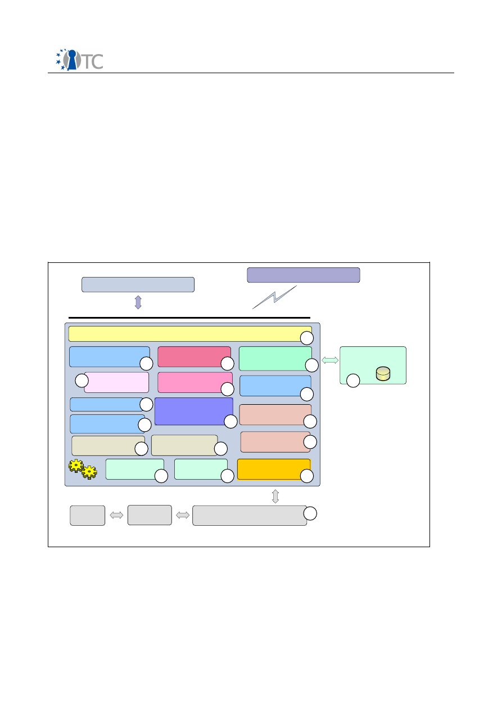
TPM Software Stack (TSS) Implementation and Test Report
V1.0 Final
4.2 TCG-TCS architectural building blocks
A service provider is any component used by the application that allows that
application access to the TCS (and thus the TPM) from within the application’s process.
Service providers, of which the TSP is but one possible instantiation, cannot
communicate directly with the TPM. Additionally, there are multiple common services
that either are either required to be shared or should be shared among the set of the
platform’s service providers.
The TCG Core Services (TCS) provides a common set of services per platform for all
service providers. Since the TPM is not required to be multi-threaded, it provides
threaded access to the TPM.
TCG-TSS-Service-Provider
(local)
Basic architectural building blocks for TCG -TSS-Core-Service
Physical -TPM-
Command-Module
Persistent -Storage-
Access -Component
TCG-Core-Service-
TPM-Access
TCS-Persistent -
Storage (system)
TCG-TSS-TDDL
TCS-Interface -Layer (SOAP-Interface)
1
Logical cache
content handling
TCSI-Level
TPM connection
management
Setting and Policy
Access
Streaming-Helper-
Classes
Error-Handling -Class
Synchronization -Helper-
Module
TCS-Module-
Management
Facade-Abstraction -
Component
Logical TPM Resource
handling
TPM Device organize
management
Extended TPM Resource
and access handling
Common-Module-
Service
4
2
3
5
6
7
8
9
12
13
14
15
16
17
18
19
TCS
TCG-TSS-Service-Provider
(remote )
…
TPM
TPM-Driver
Physical cache strategy
and organization
10
11
Figure 4: Basic architecture building blocks for TCG TSS CORE Service
Open_TC Deliverable 03.1
27/53

TPM Software Stack (TSS) Implementation and Test Report
V1.0 Final
1. TCS-Interface-Layer (SOAP-Interface)
The interface to the TCS is the TCS Interface (Tcsi). This is a simple ‘C’ style
interface but should be realized in SOAP. While it may allow multi-threaded
access to the TCS, each operation is intended to be atomic. It resides as a
system process, separate from the application and service provider processes. If
the environment provides for the TCS to reside in a system process,
communication between the service providers and the TCS would be via an RPC.
2. Persistent-Storage-Access-Component (System)
Component covers the physical access and representation of the TCS persistent
storage representation. The TSS specification separates the storage context into
a per user boundary and in a system linked one. This functionality and the data
representation reflect a TSS (i.e. TSP and TCG) common code component.
3. Facade-Abstraction-Component
Component contains a facade factory to generate separate facade objects per
calling context. This layer performs the parameter checking for the TCS-
Interface.
4. Synchronization-Helper-Module
Collection of some small helper classes; encapsulate the native system calls for
synchronization object handling.
5. Logical cache content handling
Characterize a logical TPM device per connection context and organize logical
resource cache management.
6. Logical TPM Resource handling
Contain a management class and resource classes for the two major handled
resource types key and authorization sessions. The task is divided into a
resource map management and into a resource representation unit.
7. Setting and Policy access
Function and class pool to summarize operations used to access and validate
setting information.
8. Extended TPM Resource and access handling
Characterize a physical TPM device is designed as singleton and organize
physical resource cache management. Due to the character as single entry
point for all TPM operations this layer is responsible for TPM access
synchronization.
9. Error-Handling-Class
Helper class(es) used in the exception handling process of the TSS components
(i.e. TSP and TCS). The structured exception concept will be used for error
handling inside of the TSS modules.
10.Streaming-Helper-Classes
Helper classes transform TCG structures into BYTE-Stream-Representation and
verse versa.
11.Physical cache strategy and organization
Contain a physical management classes and resource classes for the two major
handled resource types key and authorization sessions. The task is divided into
a resource map management and into a resource representation unit. In
addition this component automatically detects the underlying TPM device
version and selects the corresponding physical caching strategy and function
set.
12.Physical-TPM-Command-Module
Module is responsible for the TPM command stream generation (byte-stream-
generator) receiving the response and extracting the response parameter
Open_TC Deliverable 03.1
28/53

TPM Software Stack (TSS) Implementation and Test Report
V1.0 Final
elements.
13.TPM-Device organize management
Component includes classes and functionality to handle TPM device specific
startup and shutdown procedures. In addition it controls the consistence of the
resource management of the TCS.
14.TPM connection management
Contain the management classes and functionality to establish the connection
to the TPM device. A further task is to setup the power management control
handling between IFX-TPM-Driver and TCS.
15.Common-Module-Service
Common functions used for TCS module management (e.g. registration, start
and stop).
16.TCS-Module-Management
General operations used to administrate and arrange TCS module wide services
(e.g. memory handling).
17.TCG-Core-Service-TPM-Access
Component covers the physical access and representation of the TDDL
communication. Abstraction layer offer the functions to establish, operate and
close the TPM communication in a local situation.
18.TCS-Persistent-Storage (System)
Contain the physical data representation for TCS persistent storage (on per
system and access able for all users). The preferred mechanism would be XML
based.
19.TCG-TSS-TDDL
The TCG Device Driver Library (TDDL) is an intermediate module that exists
between the TCS and the kernel mode TPM Device Driver (TDD). The TDDL
provides a user mode interface. Such an interface has several advantages over
a kernel mode driver interface:
It ensures different implementations of the TSS properly communicate
with any TPM.
It provides an OS-independent interface for TPM applications.
Because the TPM is not required to be multithreaded, the TDDL is to be a single
instance, single threaded module. The TDDL expects the TPM command
serialization to be performed by the TCS. The exception to the single threaded
nature of the TDDL is the Tddli_Cancel operation. The Tddli_Cancel allows the
TCS to send an abort operation to the TPM.
The TPM vendor is responsible for defining the interface between the TDDL and
the TDD. The TPM vendor can choose the communication and resource
allocation mechanisms between this library and any kernel mode TPM device
driver.
Open_TC Deliverable 03.1
29/53
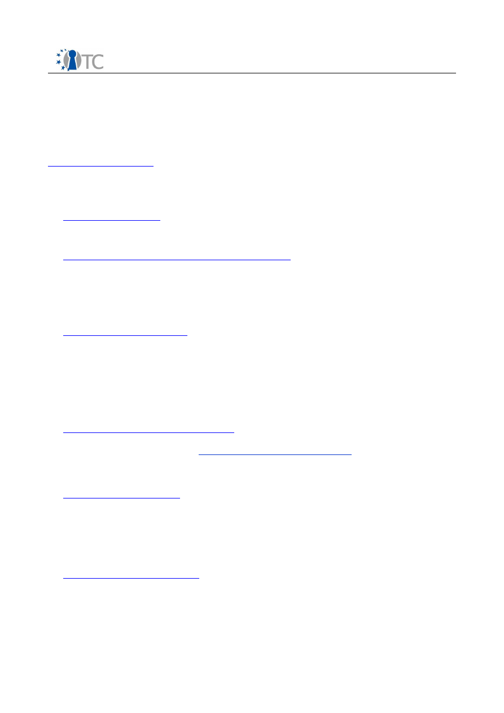
TPM Software Stack (TSS) Implementation and Test Report
V1.0 Final
5
OpenTC development environment configuration and
requirements
5.1 Eclipse
http://www.eclipse.org
IDE consists of Editor / Compiler front-end / Debugger front-end
- Freely available for Linux and Windows
CDT
http://eclipse.org/cdt
C/C++ Plugin for Eclipse
Install: Use the following URL in a Site Bookmark in the update manager:
http://download.eclipse.org/tools/cdt/releases/eclipse3.1
5.2 Version Control System
Subversion
http://subversion.tigris.org
Directory structure (suggestion, no must-have)
1. directory TRUNK (main latest)
2. directory BRANCHES
3. directory TAGS (to implement a „labeling“ mechanism)
4. directory RELEASE (versions to be released)
Subclipse
http://subclipse.tigris.org/#subclipse
Subversion Plug-In for Eclipse
Installation into Eclipse: Add
http://subclipse.tigris.org/update
as an update site in
Eclipse's update manager (which you can find in the Help menu).
RapidSVN
http://rapidsvn.tigris.org/
Standalone subversion client available for Linux and Windows
5.3 Change- / Error-Managementsystem
iTracker
http://www.cowsultants.com/
Java / J2EE based bug tracking system
https Web access / Installation as Eclipse Plug-In
Open_TC Deliverable 03.1
30/53

TPM Software Stack (TSS) Implementation and Test Report
V1.0 Final
6
Installation Procedure for the TSS
OpenTC - Trusted Software Stack - Source Release
---------------------------------------------------------------------
Contents
========
0. Usage
1. Introduction
2. Prerequisites
2.1 Hardware
2.2 Software
2.3 Installing the required software components
3. Installation
4. Running the TSS
5. Building and running the testprograms
---------------------------------------------------------------------
0. Usage
* Usage Terms
* This program is an implementation of the Trusted Computing Group TSS standard
* as a computer program and is distributed under a dual license
* that allows open-source use under a GPL-compatible license for educational
* and research use and for closed-source use under a standard commercial
* license.
*
* Copyright 2006 Infineon Technologies ( www.infineon.com/TPM ).
* All rights reserved.
*
* Redistribution and use in source and binary forms, with or without
* modifications, are permitted provided that the following conditions are met:
*
* 1.Redistributions of source code must retain the above copyright notice,
* this list of conditions and the following disclaimer.
*
* 2.Redistributions in binary form must reproduce the above copyright notice,
* this list of conditions and the following disclaimer in the documentation
* and/or other materials provided with the distribution.
*
* 3.Redistributions in any form must be accompanied by information on how to
* obtain complete source code for this software and any accompanying
* software that uses this software. The source code must either be
* included in the distribution or be available for no more than the cost of
* distribution, and must be freely redistributable under reasonable
* conditions. For an executable file, complete source code means the source
* code for all modules it contains or uses. It does not include source code
* for modules or files that typically accompany the major components of the
* operating system on which the executable file runs.
Open_TC Deliverable 03.1
31/53

TPM Software Stack (TSS) Implementation and Test Report
V1.0 Final
*
* THIS SOFTWARE IS PROVIDED "AS IS" AND ANY EXPRESS OR IMPLIED WARRANTIES,
* INCLUDING, BUT NOT LIMITED TO, THE IMPLIED WARRANTIES OF MERCHANTABILITY,
* FITNESS FOR A PARTICULAR PURPOSE, OR NON-INFRINGEMENT, ARE DISCLAIMED. IN NO
* EVENT SHALL THE AUTHOR BE LIABLE FOR ANY DIRECT, INDIRECT, INCIDENTAL,
SPECIAL,
* EXEMPLARY, OR CONSEQUENTIAL DAMAGES (INCLUDING, BUT NOT LIMITED TO,
* PROCUREMENT OF SUBSTITUTE GOODS OR SERVICES; LOSS OF USE, DATA, OR PROFITS;
* OR BUSINESS INTERRUPTION) HOWEVER CAUSED AND ON ANY THEORY OF LIABILITY
* WHETHER IN CONTRACT, STRICT LIABILITY, OR TORT (INCLUDING NEGLIGENCE OR
* OTHERWISE) ARISING IN ANY WAY OUT OF THE USE OF THIS SOFTWARE, EVEN IF
* ADVISED OF THE POSSIBILITY OF SUCH DAMAGE.
*
* The licence and distribution terms for any publicly available version or
* derivative of this code cannot be changed. I.e. this code cannot simply be
* copied and put under another distribution licence
* [including the GNU Public Licence.]
---------------------------------------------------------------------
1. Introduction
This is the official source tree of the Trusted Software Stack (TSS)
within the OpenTC project.
The TSS is a software collection to utilize the Trusted Platform
Module (TPM) in your computer.
For details about your TPM and its capabilities visit these sites:
www.trustedcomputinggroup.org
www.opentc.net
---------------------------------------------------------------------
2. Prerequisites
To efficiently utilize the TSS in your computing environment must
meet some requirements in hardware and software issues:
2.1 Hardware
Your motherboard needs a TPM device mounted. If one is
available, it must be activated in your BIOS.
2.2 Software
To compile the complete TSS the following software
components must be available and properly installed:
gcc C/C++ compilers
Xerces-C XML Parser
Xerces-C-devel XML Parser files for development
Xalan-C XPATH extension for Xerces-C
Xalan-C-devel files for development
openssl Crypto and hashing functions
openssl-devel files for development
e2fsprogs For libuuid
Open_TC Deliverable 03.1
32/53

TPM Software Stack (TSS) Implementation and Test Report
V1.0 Final
e2fsprogs-devel files for development
(tpm-driver) The TPM driver behind your TPM's devnode
gSOAP Version 2.7.9d for IPC matters. (SP<->CS)
Note: communicating SP and CS need to have exactly
the same gSoap version, otherwise communication
will fail! This can be found mainly in remote
scenarios.
POSIX threads linkable via -lpthread
For Mandriva systems it may be also needed to install
Bison
Flex
include /usr/local/lib to your library path
2.3 Installing the required software components
This part describes some details about installing the required
software components for building the complete TSS.
tpm-driver:
Firstly, you should enable the hardware module (TPM) from the BIOS setup.
The drivers are already included in the kernel since version 2.6.13.
Atmel and Infineon
chips are supported. You can load this driver by "modprobe tpm_infineon"
or
"modprobe tpm_tis". If loading of the driver is successful, you then get
a device node
like "/dev/tpm"
For other TPM drivers and older kernel versions, see
http://forum.emscb.org/phpbb/.
Xerces-C
Xerces-C-devel
Xalan-C
Xalan-C-devel
openssl
openssl-devel
e2fsprogs
e2fsprogs-devel
For these components, you can easily download their RPM files and
install them by "rpm -i filename" or you also can use the
software(package)
management tool that should be available in the most linux
distributions. This
is also the preferable way.
Here an example for installing software in SUSE 10.1 is demonstrated:
1) Select "System / Yast (Control Center)" from the startmenu
2) Select "Installation Source"
3) Select "Add / FTP" resp. "Add / HTTP"
4) Add the following entries:
ftp://ftp.gwdg.de/suse/i386/10.1/SUSE-Linux10.1-GM-Extra
http://ftp.gwdg.de/pub/suse/update/10.1/
ftp://ftp.gwdg.de/pub/opensuse/distribution/SL-10.1/inst-source/
Open_TC Deliverable 03.1
33/53

TPM Software Stack (TSS) Implementation and Test Report
V1.0 Final
5) Move the added entries to the top of the list by selecting them
and pushing "up"
6) Push the "Finish" button
Now it takes a little time to read in the added installation
catalogues. When it has finished
you can simply start "Software Management", search for Xerces-c,
Xerces-c-devel, Xalan-c,
Xalan-c-devel, openssl,openssl-devel, e2fsprogs, e2fsprogs-devel
select and install them. The
complete installation is now done automatically and you can use the
packages.
Another example for Fedora6:
1) Select "Applications" in the Panel that is usually above the Desktop
2) Select "Add/Remove Software". Then the Package Manager will start
3) Select the tab "Search" in the Package Manager.
4) Now you can search any software by typing the name like Xerces-c,
then you can click "apply" to install
gSOAP:
For gsoap, please do not use a rpm to install gsoap, because in most
cases, it just installed the
"production" files and not the development package with the headers.
Please install gsoap by source.
Building gsoap
--------------
- cd /your_gsoap_source_folder/gsoap-2.7.9d
- ./configure
- edit file "stdsoap2.cpp" line 3957 in folder
/home/user/temp/gsoap-2.7.9d/soapcpp2
replace
ext_data = ASN1_item_d2i(NULL, &data,
ext->value->length,
ASN1_ITEM_ptr(meth->it));
by
ext_data = ASN1_item_d2i(NULL, (unsigned const char**)&data,
ext->value->length,
ASN1_ITEM_ptr(meth->it));
save and exit the file
- edit file "stdsoap2.cpp" line 3965 in folder
/home/user/temp/gsoap-2.7.9d/soapcpp2
replace
ext_data = meth->d2i(NULL, &data, ext->value->length);
by
ext_data = meth->d2i(NULL, (unsigned const char**)&data, ext-
>value->length);
save and exit the file
- make
Open_TC Deliverable 03.1
34/53

TPM Software Stack (TSS) Implementation and Test Report
V1.0 Final
- make install
--------------
For building gsoap, you may need flex (please also install it by source)
Building flex
--------------
- ./configure
- make
- make install
--------------
PS: If you want install gsoap and flex in the default
folder(recommended), you need to
switch to root account.
If you have problems during the build process like missing libraries,
please
run ./configure again after you fixed the problem (like installing
missing libraries).
---------------------------------------------------------------------
3. Installation
To install the TSS from the sources, simply invoke the build_and_install.sh
script with exactly the same options as you would supply to the configure
scripts in the subdirectories.
E.g. to install in the non-standard folder /dev/shm/opentss you can call
"build_and_install.sh --prefix=/dev/shm/opentss" and for building a debug
version you can call "build_and_install.sh --enable-debug"
Note that non-standard installation prefixes require
tweaking LD_LIBRARY_PATH (recommended) or the ld cache
(ld.so.conf, etc. - not recommended) when running the stack.
Remark: To build and install the TSS no running TPM driver is
neccessary.
---------------------------------------------------------------------
4. Running the TSS
The TSS itself is NO stand-alone program that pops up e.g. with a GUI
when it is started. The main component of the stack is the coreservice
and has to be started with administrator rights. It uses a device driver
library (DDL) to access the device driver of the TPM. Applications that
want to use the stack have to utilize the service provider shared library
(link against it) to communicate with the core service.
Each application can have its own service provider but the core service
exists only once per machine. For detailed information concerning the
structure of a TSS, please refer to the documentation provided from
the TCG (see chapter 1).
- There are three resulting binaries after installation:
the service provider shared library (tss_sp.so) and the DDL shared library
Open_TC Deliverable 03.1
35/53

TPM Software Stack (TSS) Implementation and Test Report
V1.0 Final
(tpm_ddl.so) in the 'lib' folder, and the core service daemon (coreserviced)
in the 'bin' folder.
- The core service daemon (coreserviced) can be started as daemon
(without any command line parameters, this is the dedicated usage)
or as normal executable (with "--debug" as command line parameter)
- The core service dynamically loads the DDL shared library (libtpm_ddl.so).
Therefore it is necessary that it finds the DDL shared library at runtime.
This can be achieved by setting the LD_LIBRARY_PATH environment variable
to the desired folder (e.g. export LD_LIBRARY_PATH=/dev/shm/opentss/lib)
- The service provider shared lib (libtss_sp.so) can be used from each
testprogram
or any self written program and accesses the core service via a soap
interface.
Hint: When the core service is started, it writes status information with
different log levels to the systems log file(s). For openSuse systems this
is in "/var/log/messages", for a Mandriva distribution the information is
split up to several log files. If problems encounter in getting the TSS system
to work, you probably can determine the cause for this by inspecting the
log file(s).
---------------------------------------------------------------------
5. Building and running the testprograms
The source package contains a folder called "testprograms". You can build these
with the included Makefile (please adapt the needed paths before), run each
testprogram
on its own or start the "run.sh" script to run several testprograms
subsequently.
As some of the testprograms use owner authorization, please also adapt the
hardcoded
owner password in the .cpp files before compiling them (Otherwise these
testprograms
will fail due to wrong owner authorisation).
For building the testprograms, you need to make sure that the OpenTC TSS is
properly
installed, because the service provider shared library is referenced in the
building
process and will be linked to the resulting executable.
For running the testprograms you may need to set the LD_LIBRARY_PATH (if you
didn't
install the TSS in the standard folder), so that the service provider shared
library
(libtss_sp.so) can be found.
Open_TC Deliverable 03.1
36/53

TPM Software Stack (TSS) Implementation and Test Report
V1.0 Final
7
Test and Evaluation Support Programs
################################################################################
######
testprograms using the TSPI interface of the TSP (complete TSS usage: TSP, TCS,
TDDL)
################################################################################
######
tspi_tpm_getrandom get 20 random numbers from the TPM,
Tspi_TPM_GetRandom, Tspi_TPM_StirRandom
tspi_tpm_getrandom_load get 20 random numbers from the TPM, repeat 10000
times, each time a new context is used
(possibility to use 30 contexts in parallel)
mt_tspi_tpm_getrandom get 20 random numbers from the TPM, using one
context and 30 threads in parallel
tspi_tpm_getstatus retrieve the states of 4 persistent flags
(TSS_TPMSTATUS_SETOWNERINSTALL,
TSS_TPMSTATUS_DISABLEOWNERCLEAR,
TSS_TPMSTATUS_DISABLED,
TSS_TPMSTATUS_DISABLEPUBEKREAD) from the TPM,
Tspi_TPM_GetStatus
tspi_tpm_setstatus disable / enable the TPM, Tspi_TPM_SetStatus
tspi_tpm_getcapability retrieve som capabilities from TPM and TCS
Tspi_TPM_GetCapability,
Tspi_Context_GetCapability
tspi_tpm_takeownership take ownership of the TPM,
Tspi_TPM_TakeOwnership
tspi_tpm_clearowner clear the TPM ownership, Tspi_TPM_ClearOwner
tspi_tpm_selftestfull execute tpm selftest, Tspi_TPM_SelfTestFull,
Tspi_TPM_GetTestResult
tspi_tpm_quote test the quote functionality, Tspi_TPM_Quote
tspi_tpm_getpubendorsementkey retrieve the public part of the EK,
Tspi_TPM_GetPubEndorsementKey,
Tspi_TPM_SetStatus
tspi_key_getpubkey get the public part of the SRK,
Tspi_Key_GetPubKey
tspi_key_createkey create a key pair within the TPM, T
spi_Key_CreateKey, Tspi_Context_LoadKeyByUUID
Tspi_Key_LoadKey, Tspi_Key_UnloadKey,
Tspi_Key_GetPubKey
tspi_key_wrapkey create a key pair within the TPM and wrap it
with the given wrapkey,
Open_TC Deliverable 03.1
37/53

TPM Software Stack (TSS) Implementation and Test Report
V1.0 Final
Tspi_Key_WrapKey, Tspi_Key_LoadKey
tspi_changeauth change the authorization data (secret) of an
entity (object) and assign
the object to the policy object, Tspi_ChangeAuth
tspi_changeauth_owner change the owner authorization, Tspi_ChangeAuth
nvm_functions test of non volatile memory functions,
Tspi_NV_DefineSpace, Tspi_NV_ReleaseSpace,
Tspi_NV_WriteValue, Tspi_NV_ReadValue
transport1 Tspi_Data_Bind, Tspi_Data_Unbind,
Tspi_Data_Seal, Tspi_Data_Unseal
migtst test of migration functions,
Tspi_TPM_AuthorizeMigrationTicket,
Tspi_Key_CreateMigrationBlob,
Tspi_Key_ConvertMigrationBlob
pcrtst test of PCR and PCR composite functionality,
Tspi_PcrComposite_SelectPcrIndex,
Tspi_PcrComposite_GetPcrValue,
Tspi_PcrComposite_SetPcrValue,
Tspi_TPM_PcrRead,
Tspi_TPM_PcrExtend
tspi_context_getKeyByUUID_system get a key by UUID from the system persistent
storage
tspi_context_getKeyByUUID_user get a key by UUID from the user persistent
storage
tspi_context_registerkey_system register a key in the system persistent
storage
tspi_context_registerkey_user register a key in the user persistent
storage
tspi_context_loadkeybyblob load a key from a keyblob,
Tspi_Context_LoadKeyByBlob
provoke_error test some functions that must give an error:
- close the default policy object
- close the TPM object / close the policy object of the TPM
object
- create 2 keys and one policy, assign the policy to both
keys,
create first key and then delete the policy, create key 2
fails
- assign a new policy to the context object
- assign a new policy to the tpm object
key_auth_chain This test creates 3 keys in a hierarchy, the middle of which
requires auth.
This is meant to test the TSS_LOADKEY_INFO functionality. The
TCS should
try to load key 2 first and notice that its parent needs
Open_TC Deliverable 03.1
38/53

TPM Software Stack (TSS) Implementation and Test Report
V1.0 Final
loading. When it
tries to load key 1, it should see that there's auth data
there and return
a TSS_LOADKEY_INFO struct to the TSP. The TSP should
transparently handle
this structure to get...
SRK
\
hKey0 (no auth)
\
hKey1 (auth)
\
hKey2 (no auth)
callback test HMAC callback, XORENC callback and TAKEOWNERSHIP
callback functionality
hash tests covering the hash object: creation,
Tspi_Hash_SetHashValue,
Tspi_Hash_GetHashValue, Tspi_SetAttribData, Tspi_Hash_Sign,
Tspi_Hash_VerifySignature
enc_dec test Tspi_EncodeDER_TssBlob and Tspi_DecodeBER_TssBlob
functions
################################################################################
######
basic TPM setup (using only TDDL, no TSP and no TCS), TCS must not be running
################################################################################
######
inittpm TPM_Startup, TPM_PhysicalPresence, TPM_PhysicalPresenceSet,
TPM_PhysicalEnable
TPM_SetDeactivated (false), TPM_SelfTestFull, TPM_GetRandom,
TPM_GetCapability (TPM_CAP_VERSION)
startuptpm TPM_Startup, TPM_SelfTestFull, TPM_GetRandom, TPM_GetCapability
(
TPM_CAP_VERSION)
forcecleartpm TPM_Startup, TPM_PhysicalPresence, TPM_PhysicalPresenceSet,
TPM_ForceClear,
TPM_SelfTestFull, TPM_GetRandom, TPM_GetCapability
(TPM_CAP_VERSION)
Open_TC Deliverable 03.1
39/53
TPM Software Stack (TSS) Implementation and Test Report
V1.0 Final
8
Test Procedures for the Development Phase
This chapter gives an overview of the tests that have been developed and used for
testing and quality assurance of the API’s of the TCG Software Stack (TSS) within the
project OpenTC. This comprises the TSPI (TSS Service Provider) and TSS Core Service.
The TPM drivers are not part of this activity because they are already available as part
of the Linux kernel 2.6.16 and later.
This package proposes a setup for the test environment and implementation hints so
that the test cases developed by different people will be consistent in their handling.
The testing generally is done by calling from the test harness the appropriate
functions provided by the TPM and TSS components via the automated script
environment.
The actual implementation of the tests is done by writing scripts for an interpreter on
top of an automatically generated TSPI wrapper.
8.1 Glossary of Terms
Terms/Abbreviations
Definition
Client Area:
Platform Security Chip
The TPM chip itself
Security Platform
Is a platform equipped with a
Platform Security Chip
Security Platform User
This is a platform user who is also using the Security Platform.
Security Platform Owner
Is the owner of the
Platform Security Chip
.
8.2 Test environment
8.2.1 Security Platform:
§
The Security Platform , which carries the TSS stack as testobject, requires a TPM
chip, like the Infineon TPM SLB9635TT1.2 be setup properly with the TPM
firmware V1.00 or higher and corresponding BIOS integration support (e.g.
ACPI).
8.2.2 External/existing modules for Security Platform:
Compiler: gcc version 4.1.0-25 and higher
Linux Kernel on target system: 2.6.17 or higher
Open_TC Deliverable 03.1
40/53

TPM Software Stack (TSS) Implementation and Test Report
V1.0 Final
Crypto-Library: openssl 0.9.8a-16 + openssl-devel 0.9.8a-16
SOAP-Library (used for CS and SP SOAP-Interface): gSoap -> gsoap_2.7.6e.tgz
XML-Library (used for persistent storage of CS and SP):
Xerces -> Xerces-c 2.7.0.11+ Xerces-c-devel-2.7.0-11
XPATH extension for Xerces: Xalan -> Xalan-c 1.10-10 + Xalan-c-devel 1.10-10
Generation of UUIDs: libuuid -> e2fsprogs 1.38-25 +e2fsprogs-devel 1.38-25
Transports messages to and from remote objects using the SOAP protocol.
Ruby interpreter v1.8.5
Native 32 Bit computer platforms for carrying test harness and test object
8.2.3 Test environments for different test methods
For different test purposes and scenarios we use adapted environments:
8.2.4 PHP –interface for browser supported testing
This allows an easy interfacing to standard browsers and therefore a manual user
supported test execution especially for error identifying and isolation. Additional trace
monitoring assists in test reproduction and test documentation.
8.2.5 Ruby test environment interpreter for automatic test sequencing
The Ruby interpreter can be used to offer an automatic test execution support for
large scale regression tests and similar activities
Ruby is a relational language developed by Jones and Sheeran for describing and
designing circuits. Ruby programs denote binary relations, and programs are built-up
inductively from primitive relations using a pre-defined set of relational operators.
Ruby programs also have a geometric interpretation as networks of primitive relations
connected by wires, which is important when layout is considered in circuit design.
Ruby has been continually developed since 1986, and has been used to design many
different kinds of circuits but also test language environments.
Ruby is a pure, untyped, object-oriented language—just about everything in Ruby is an
object, and object references are not typed. People who enjoy exploring different OO
programming paradigms will enjoy experimenting with Ruby: it has a full metaclass
model, iterators, closures, reflection, and supports the runtime extension of both
classes and individual objects.
Ruby is being used world-wide for text processing, XML and web applications, GUI
building, in middle-tier servers, and general system administration. Ruby is used in
artificial intelligence and machine-learning research, and as an engine for exploratory
mathematics.
Open_TC Deliverable 03.1
41/53

TPM Software Stack (TSS) Implementation and Test Report
V1.0 Final
Ruby’s simple syntax and transparent semantics make it easy to learn. Its direct
execution model and dynamic typing let you develop code incrementally: you can
typically add a feature and then try it immediately, with no need for scaffolding code.
Ruby programs are typically more concise than their Perl or Python counterparts, and
their simplicity makes them easier to understand and maintain. When you bump up
against some facility that Ruby is lacking, you’ll find it easy to write Ruby extensions,
both using Ruby and by using low level C code that adds new features to the
language. We came across Ruby when we were looking for a language to use as a
testing and specification tool.
The Ruby approach to test design is to derive implementations from specifications in
the following way. We first formulate a Ruby program that clearly expresses the
desired relationship between inputs and outputs, but typically has no direct translation
as a test. We then transform this program using algebraic laws for the relational
operators of Ruby, aiming towards a program that does represent a test environment.
There are several reasons why Ruby is based upon relations rather than functions.
Relational languages offer a rich set of operators and laws for combining and
transforming programs, and a natural treatment of non-determinism. Furthermore,
many methods for combining circuits (viewed as networks of functions) are unified if
the distinction between input and output is removed.
8.3 Tracing and Protocol
The components TCS and TSP do not write any trace information. For the purpose of
tracing, a special tool/environment will be used, if necessary.
The test script and all results of each test case shall be written into a protocol file. The
protocol has the same tags as the test protocols of the TSS, so that only one style
sheet for all test protocols will be needed.
8.4 Test Development
8.4.1 Formal Requirements for the Test Plan
The test cases are grouped into test subjects. For each test subject, there is a sub
chapter in this document. This sub chapter contains a short overall description of the
test subject and a table with one row for each test case.
The first column denotes the test case priority. The second one contains a unique
identifier for the test case, the third one a description of the test case that should be
sufficient to implement the corresponding test script. The third column contains either
all tested commands of that test case (good cases) or the expected result for the fault
cases.
8.4.2 Formal Requirements for the Test Scripts
To achieve a certain homogeneousness of the test scripts independent on the
developer and to allow for an automated checking of the test results, the following
Open_TC Deliverable 03.1
42/53

TPM Software Stack (TSS) Implementation and Test Report
V1.0 Final
rules shall be followed.
The name of a test script shall include the unique identifier of the test case it
implements. It shall be obvious from the script’s name, which test case it realizes.
The suffix of a test script shall indicate its use.
*.rb for standalone scripts that can be invoked from the command line
*.inc scripts to be included in other scripts that define commonly used variables
If scripts contain possible dependencies they shall be realized as includable. A test
case using this subroutine might then only contain the unique test case identifier and
include the subroutine script.
For example encryption and decryption: the functionality of encrypting shall be put in
a subroutine script as well as the functionality of decrypting. Then both of them shall
be included by the standalone script thus calling the functions in the appropriate
order.
Each standalone script shall release all variables by means of a instruction before
terminating so that various standalone scripts can be invoked by means of include
instructions by a master script.
Each standalone script that represents the main script of a test case must include a
reference to the unique test case identifier by containing a line
<Test-Id> unique identifier </Test-Id>
which is an tag that will be treated as a comment and written into the protocol file
without change.
Each script must contain two version information fields which can be automatically
added to the protocol file. That means, each time a script is checked in into the
database (and it was modified in a major manner), its version number must be
increased by the author and the current date is set.
8.5 General Requirements for the Test Scripts
Hardware TPM’s do not get a reset from software and therefore do not clear any
previously set values, including PCR’s and keys.
If a test script uses any PCR values, it must set the PCRs with an Extend command.
At the end of each script all keys loaded by that script shall be evicted to avoid
problems running on hardware TPM.
8.5.1 Hints for test script development
See chapter 3.5 for already implemented helper functions.
8.6 Guidelines for Test Development
Identify a test subject
Insert a sub chapter into chapter TSPI of this document
Open_TC Deliverable 03.1
43/53

TPM Software Stack (TSS) Implementation and Test Report
V1.0 Final
Write a short description of the test subject
Develop the test scripts according to the table in the test plan. Usually, one test
script will contain one test case.
Fault test cases usually contain more than one test case in each row and each
test script.
Debug the test scripts with the help of the Scripting Debug Tool.
8.7 Helper functions
Scripting environment does not handle by default TCG specific structured data but
only byte streams. To achieve the functionality of this the TSPI-Wrapper exports
classes, to implement some helper functions.
These helper functions can be realized as script functions first and may later be
included in the wrapper module.
8.7.1 Defined helper functions:
These helper functions are implemented in the scripting dialect and can be found in
the generic folder.
Different compare methods (“Test” instruction)
Various protocol functions
Retrieve internal version of all included scripts
ReadFromFile
WriteToFile
PrintData
Bin2String
AppendArrays
Functions for ASN.1 handling
Functions for extracting parameters from TCPA structures
8.8 Scripting library
All data types in the interface handled as pointer have to be handled by the
corresponding class objects in the scripts.
8.9 Provoking Fault cases
To be able to provoke fault cases, it is desirable to create a special TDDL library
capable of changing the handled data.
As a next step , still outside the scope of this document, a special test environment
Open_TC Deliverable 03.1
44/53
TPM Software Stack (TSS) Implementation and Test Report
V1.0 Final
will be developed for provoking such errors and storing these test results.
Driven by a separate text (ini) file, this test environment and library will change,
delete or insert (ranges of) bytes of specified commands which were send from the
TPM to the TSS.
8.10 Running and Exercising the Tests
Running the Tests
Open a command window
change to the script directory within <test subject>
run the test script file
archive the results in the archive directory
8.10.1 Test coverage
All test cases from this test plan shall be imported into a test coverage database.
The test results of all final tests will be imported into the same test coverage
database.
8.11 Presentation of Test Results
The test results are primarily delivered in the form of the protocol files written by
helper functions.
As the protocol file contains tags for certain attributes of the test cases and their
results, it is possible to extract various summarizing reports from the protocol file.
Sample protocol file:
*************************************************
Test script: IS2_TSP_001_CreateKey1.rb
Protocol: ..\TssProtocols\ IS2_TSP_001_CreateKey1.pro
TSS Core Service: ..\TCG\TPM-SW\TSS\bin\TCS.exe
version: 2.0.0.0
last modified: 26.10.2005 16:20:11
TSS Service Provider: ..\TCG\Tsp\tsp.dll
version: 2.0.0.0
last modified: 02.12.2005 15:07:28
*************************************************
Open_TC Deliverable 03.1
45/53

TPM Software Stack (TSS) Implementation and Test Report
V1.0 Final
<Test-Id> IS2_TSP_001_CreateKey1 </Test-Id>
<Script-Revision> 1.0.0 </Script-Revision>
<Script-Date> 10.10.2006 </Script-Date>
*************************************************
# Test started at 10.10.2006 16:05:59
*************************************************
TSS version 1.2 selected
Firmware version: 1.00
*************************************************
System:
Kernel: 2.6.16.13
Xerces:2.7.0-11
Xalan-C: 1.10-10
GSOAP: 2.7.7
Ruby: 1.8.5
*************************************************
<Test-Id-Start> IS2_TSP_001_CreateKey1 </Test-Id-Start>
TspConnect
TspConnect succeeded !
TspCreateObject(4,0)
TspCreateObject succeeded !
TspCreateObject(2,67108864)
TspCreateObject succeeded !
TspKeySRK.GetPolicyObject succeeded !
TspSRKPolicy.SetSecret succeeded !
TspCreateObject(2,0)
TspCreateObject succeeded !
TspCreateObject(1,1)
TspCreateObject succeeded !
TspPolicyUsage.AssignToObject succeeded !
PolicyUsage.SetSecret succeeded !
Open_TC Deliverable 03.1
46/53

TPM Software Stack (TSS) Implementation and Test Report
V1.0 Final
TspCreateObject(1,2)
TspCreateObject succeeded !
TspPolicyMigration succeeded !
PolicyMigration.SetSecret succeeded !
TspCreateKey succeeded !
TspKey.GetAttribData succeeded !
keyBlob:
0x30, 0x82, 0x01, 0xEB, 0x02, 0x01, 0x01, 0x02, 0x01, 0x01, 0x02, 0x04, 0x00, 0x00, 0x01, 0xDB, 0x04,
0x82, 0x01, 0xDB, 0x01, 0x01, 0x00, 0x00, 0x00, 0x15, 0x00, 0x00, 0x00, 0x06, 0x01, 0x00, 0x00, 0x00,
0x01, 0x00, 0x02, 0x00, 0x03, 0x00, 0x00, 0x00, 0x0C, 0x00, 0x00, 0x04, 0x00, 0x00, 0x00, 0x00, 0x02,
0x00, 0x00, 0x00, 0x00, 0x00, 0x00, 0x00, 0x2C, 0x00, 0x02, 0x09, 0x00, 0x8F, 0xB4, 0x77, 0x65, 0x99,
0x63, 0xF3, 0x84, 0x63, 0x58, 0xE3, 0x9C, 0x4A, 0x89, 0x74, 0x50, 0xBB, 0x1C, 0xD7, 0x5D, 0x8F, 0xB4,
0x77, 0x65, 0x99, 0x63, 0xF3, 0x84, 0x63, 0x58, 0xE3, 0x9C, 0x4A, 0x89, 0x74, 0x50, 0xBB, 0x1C, 0xD7,
0x5D, 0x00, 0x00, 0x00, 0x80, 0x8C, 0x9C, 0xCC, 0xF0, 0xD9, 0x77, 0x12, 0xE1, 0x72, 0x21, 0x42, 0x93,
0xA7, 0x75, 0x54, 0x6C, 0x45, 0x33, 0xFF, 0x26, 0x1F, 0xA1, 0xC9, 0xDF, 0x6F, 0x31, 0x89, 0x35, 0x47,
0x94, 0x7D, 0xEF, 0x1D, 0xED, 0xF6, 0x15, 0x5F, 0x97, 0x19, 0x30, 0x09, 0x87, 0x28, 0x58, 0xE1, 0x46,
0x4A, 0x97, 0x4A, 0xE9, 0x5B, 0xB8, 0x59, 0x12, 0xAC, 0x21, 0x51, 0xF6, 0x4A, 0x0D, 0x4F, 0xE5, 0x84,
0x76, 0x6D, 0xAC, 0x6F, 0xE1, 0xF2, 0x5F, 0x43, 0x27, 0xB4, 0x8E, 0x16, 0xB7, 0xCB, 0x52, 0x07, 0x01,
0x9D, 0xFB, 0xC3, 0x9D, 0x52, 0xAE, 0x29, 0x62, 0x0E, 0xDA, 0x67, 0x8F, 0xAD, 0x68, 0x13, 0x2E,
0xF3, 0x9C, 0x36, 0x4F, 0xA2, 0x92, 0x22, 0x92, 0x12, 0x2D, 0x1D, 0xF0, 0xE2, 0x47, 0x78, 0x71, 0xFE,
0xD2, 0x9F, 0x8B, 0x14, 0x49, 0xFF, 0x59, 0x8B, 0x56, 0xC4, 0xED, 0x4F, 0xAF, 0x99, 0x09, 0x00, 0x00,
0x01, 0x00, 0x36, 0xF4, 0xF2, 0xB8, 0xFC, 0xD3, 0x83, 0xD1, 0x8F, 0xFD, 0x24, 0x97, 0xD9, 0x97, 0xDB,
0x06, 0x2D, 0x3C, 0x78, 0xE1, 0x82, 0x51, 0x72, 0x4D, 0xE7, 0x0F, 0x12, 0x64, 0x60, 0x1D, 0x2E, 0xE8,
0xC8, 0xE0, 0x66, 0xDF, 0xCB, 0x47, 0x05, 0xE1, 0x77, 0x30, 0x35, 0x19, 0x14, 0x9A, 0x80, 0xB5, 0x41,
0x23, 0xA9, 0x23, 0xAF, 0xF4, 0xCA, 0x0E, 0x2A, 0x43, 0xC5, 0x04, 0xE9, 0x1D, 0xA5, 0x1C, 0x35, 0x73,
0x8E, 0x4B, 0x11, 0xB0, 0xBD, 0x97, 0x14, 0x8D, 0x58, 0x17, 0xD2, 0x9A, 0xDA, 0x0A, 0xE4, 0x64,
0x10, 0xFE, 0xE3, 0x2E, 0xB4, 0x76, 0xF4, 0x10, 0x80, 0x0B, 0x50, 0xE5, 0x60, 0x76, 0x68, 0x81, 0xBE,
0x11, 0x58, 0x10, 0xBA, 0xA0, 0xC0, 0x64, 0x47, 0x8E, 0x0D, 0xA9, 0xEC, 0x07, 0x42, 0x36, 0xD5,
0x18, 0x0D, 0x73, 0x8F, 0x4D, 0x7C, 0x53, 0x7C, 0x40, 0x78, 0x4A, 0x60, 0x0E, 0x70, 0x75, 0x46, 0x61,
0xEE, 0xD7, 0xA7, 0x31, 0xC1, 0x18, 0x3F, 0x49, 0xAD, 0x5C, 0x6B, 0xDA, 0xCB, 0x90, 0x81, 0xC8,
0xBF, 0x24, 0x7D, 0x15, 0x56, 0x20, 0x30, 0x69, 0xFB, 0x98, 0x43, 0x39, 0xDE, 0xCD, 0x0F, 0x9D, 0x87,
0x30, 0xB4, 0xC1, 0xD7, 0x37, 0x83, 0xFC, 0xE7, 0xAE, 0x56, 0x48, 0xAC, 0x8D, 0xC1, 0x40, 0x1E,
0x95, 0x44, 0xD2, 0x60, 0x06, 0x4B, 0xD7, 0x35, 0x91, 0x80, 0x3D, 0xA7, 0x64, 0x60, 0x1C, 0x4D,
0x08, 0x25, 0xE8, 0x11, 0x12, 0x3E, 0xB5, 0xD0, 0xBB, 0x65, 0xDF, 0xCD, 0xB2, 0x29, 0x14, 0x12,
0xC2, 0xA3, 0x68, 0xF3, 0xF1, 0x0D, 0x44, 0xB3, 0x19, 0x15, 0xC2, 0x2C, 0xA8, 0xD1, 0xCA, 0xF2,
0xB9, 0x00, 0x2F, 0x2B, 0x2F, 0x9F, 0xE0, 0xE6, 0xA7, 0xDC, 0x49, 0xB5, 0xEC, 0x71, 0x88, 0x3E, 0x54,
0x0C, 0x50, 0xE0, 0x79, 0x6D, 0x07, 0x6E, 0xB4, 0x38, 0xD2
<Test-Id-End> IS2_TSP_001_CreateKey1 </Test-Id-End>
<Test-Id-Summery-Start> IS2_TSP_001_CreateKey1 </Test-Id-Summery-Start>
*************************************************
# TEST ERROR(S):
0
# TEST WARNING(S): 0
# TEST INSTRUCTION(S): 14
# TEST FINISHED:
10.10.2006
16.06.50
# TEST DURATION:
51 seconds
*************************************************
<Test-Id-Summery-End> IS2_TSP_001_CreateKey1 </Test-Id-Summery-End>
Open_TC Deliverable 03.1
47/53

TPM Software Stack (TSS) Implementation and Test Report
V1.0 Final
9
Test management environment based on the script language RUBY
In addition to the PHP based test interface , which has advantages for manual testing
and fast generation of result reports, we used also the well known RUBY environment
for testing.
9.1 Motivation and execution
For a full coverage of the functionality and behaviour tests of the Linux TSS stack
within the OpenTC project, we use two different test methods and implementations.
Small and compact code sequences are generated in the target programming
language C as well as for the test environment based on the RUBY script language
which use only small and compact functional of the TSS service provider. With such
high granularity tests we will minimize the risk to ignore errors within the execution
protocols. From the point of the Service provider (SP) both methods look nearly
identical, because the complementary test process is either an executable program or
an shared object from the universal test environment.
This run time library is following certain stringent rules, for allowing the RUBY
interpreter to feed through and converting the script calls of the ruby interpreter.
Amongst the many available script languages for Linux, Ruby has been selected,
because this language is consequently object oriented , the scripts are easily to read
and the generation of a linkage library to connect to the TSS SP is very much
supported by automatic code generation means.
9.2 Requirements for run time environment
9.2.1 The Ruby Interpreter
We use the self compiling Ruby interpreter vers. 1.8.5 for all applications within our
project. This standardized interface makes sure, that also any external error gives
similar results in any case.
For generation of Ruby a predefined script is available:
$OPENTSS_DIR/../../testtool/tsstest/shared/build_all
It generates the interpreter as well as the support program “swig”. During successful
generation the script also establishes within the test directory
„$OPENTSS_DIR/build/bin“ symbolic links to the support programs below
Open_TC Deliverable 03.1
48/53
TPM Software Stack (TSS) Implementation and Test Report
V1.0 Final
$OPENTSS_DIR/../../testtool/tsstest/shared/ruby/ruby_runtime/bin
and
$OPENTSS_DIR/../../testtool/tsstest/shared/swig/swig_runtime/bin
The testing personal as well as the developers have to have the target directory inside
their search paths of the shell on a location before he system definition parts.
9.2.2 Writing test scripts
For testing the TSS functions with the help of Ruby, every scripts needs only one test
definition file, e.g.:
Require "../generic/otc_environment.inc"
For example „otc_environment.rb“ includes a class of logic elements, several TSS
constants and the Ruby TSS Wrapper. This behaviour has advantages for TSS. Other
directory structures would require adaptations of the scripts.
[Ruby ]
http://www.ruby-lang.org/en/
Ruby language, a programmers best friend;
Official ruby page
[RubyD]
http://www2.ruby-lang.org/en/20020102.html
, the Ruby download page
Open_TC Deliverable 03.1
49/53
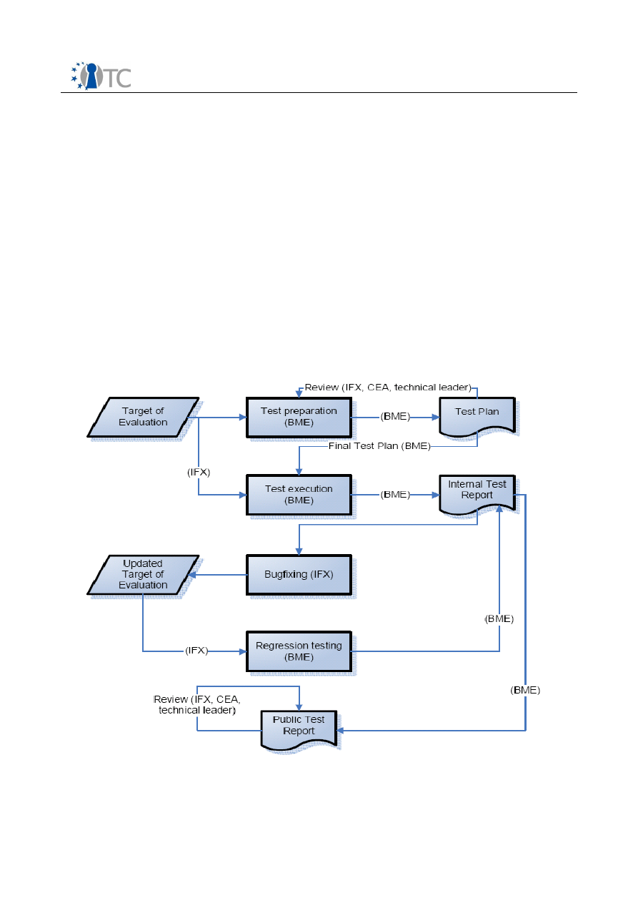
TPM Software Stack (TSS) Implementation and Test Report
V1.0 Final
10
Testing by third parties inside the OpenTC project
The Budapest University of Technology and Economics (BME) Department of
Measurement and Information Systems is responsible within the OpenTC WP 7
‘Software Development Support, Quality, Evaluation and Certification’ for the manual
and automated security testing of OpenTC software components.
BME carries out testing on different targets during the course of the project; and also
on the TSS. For this ToE a combined approach was chosen, for the API-level analysis
at the TSPI-interface level of the TCG Software Stack implementation both black-box
and white-box mode testing will be executed using the automated security testing tool
Flinder.
The main goal of the testing is to evaluate the TSS at the TSPI level using both black-
box and white-box techniques. By doing this BME will gain information about integrity
and interoperability properties of the Service Provider (SP) and Core Service (CS) parts
of the TSS implementation.
Test process overview
Figure 5: Test process overview
Open_TC Deliverable 03.1
50/53

TPM Software Stack (TSS) Implementation and Test Report
V1.0 Final
This section details the test process that will be followed by BME during the execution
of testing of the OpenTC Infineon TSS implementation. The following steps constitute
to the test process:
SECURITY OBJECTIVES
Concerning the Infineon TSS implementation BME carries out an API-level security
testing using the automated security testing tool FlINDERS. The overall goal of the
testing is to focus on typical security-relevant programming bugs and detect their
presence in the Target of Evaluation in an automated fashion.
Regarding this API-level automated security testing we formulated two types of
security objectives:
1) TCG-related security objectives build a wrapper around the security
requirements specified in the TCG documents and
2) implementation-related security objectives focusing on the properties of the
actual piece of software being under scrutiny.
The goal of the execution of the automated security testing will be to assess, to what
level the Infineon implementation fulfills these requirements.
Test approaches
BME will carry out automated security testing using the Flinder [FLINDER] tool. This
tool was selected after having carried out a comprehensive study in the field of
automated security testing utilities.
Two venues shall be considered for testing the TCG Software Stack (TSS)
implementation:
• The first approach targets the TCG Service Provider Interface (TSPI) and will employ
white-box testing techniques for vulnerability assessment. With this method we will
be able to evaluate integrity issues of the Service Provider (SP) part of the TSS
implementation.
• Other means shall be used for the second approach: black-box testing of the SOAP
transport layer. This time, deeper levels of the TSS are scrutinized for potential
threats. The SOAP communication link is targeted because it is the interface to the
TSS Core Services (TCS) layer implemented in the
coreserviced
process. This
approach will enable use to assess the security and interoperability of the Core
Service (CS) part of the TSS implementation.
Black-box testing at the SOAP connection level
The implementation of the TSS is realized by two communicating processes. Driving
the kernel device driver and providing the core service functionality is provided by the
Open_TC Deliverable 03.1
51/53
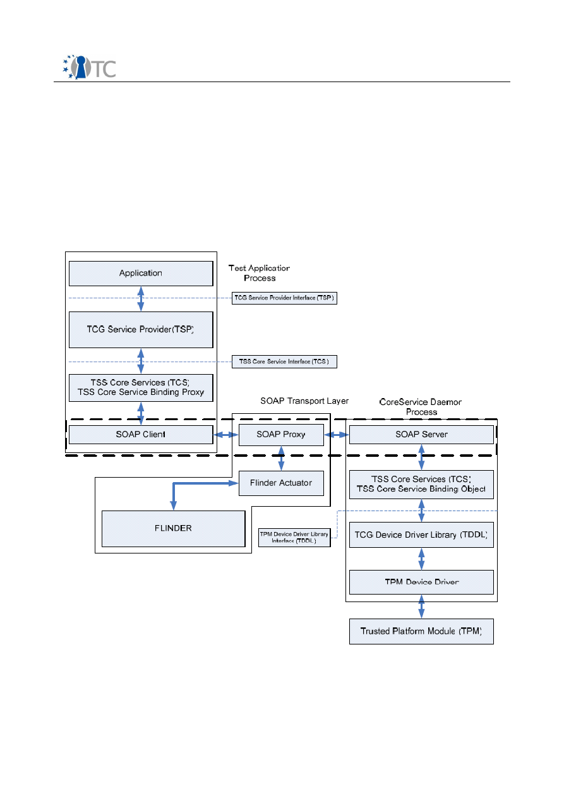
TPM Software Stack (TSS) Implementation and Test Report
V1.0 Final
coreserviced demon server process. Two TSS layers are implemented in this process,
the TDDL and the TCS. The coreserviced process exposes a programming interface,
which clients can access through the SOAP protocol.
Flinder starts the test program, but now instead of hooking the source code, the SOAP
communication is intercepted. A SOAP proxy is inserted into the data stream, which
channels data to Flinder. The intercepted data is modified and then routed back to its
original destination.
The main advantage of this procedure is that now the implementation of the
coreserviced is under investigation, and not that of the client process. In this setting
malfunctions or crashes of the client process do not mask potential failures in the core
service demon.
Figure 6: SOAP transport level hooking
The detailed description and results from these test procedures will be
available as deliverable report from OpenTC WP7.
Open_TC Deliverable 03.1
52/53
TPM Software Stack (TSS) Implementation and Test Report
V1.0 Final
11
TPM Controller: TPM Management and Control SW package
The „TPM Controller“ is a GUI application that helps the user with the initial startup of
the TPM usage. The intention of the tool is not to provide a complete set of functions
for handling all capabilities of the TPM nor displaying all possible TPM internal values,
but to "control" the basic functionality for further usage of the TPM. There are some
other applications handling the former issues, like the "TPM Manager"
(
http://sourceforge.net/projects/tpmmanager/
) or the "TPM Monitor"
(
http://sourceforge.net/projects/tpmmonitor/
).
The "TPM Controller" tool arised as a result of the OpenTC EU project and is hosted on
their homepage
http://www.opentc.net/
. It provides the possibility to take, change and
clear the ownership of the TPM, which are probably the main things to do when
initiating a TPM. In opposition to these other packages it uses exactly the official
functional TSS1.2 specification from the TCG.
Further on the current version of the used TSS, the actual TPM firmware version and
the vendor name of the TPM are displayed. On the "Status" tab the status of
Activation, Enable/Disable and if an owner is already set are displayed.
With the reset button on the "Reset" tab the owner of the TPM is able to reset the so
called "Pin Failure" count.
The "Certificate Chain" tab tries to verify the TPM built-in endorsement certificate.
11.1 Preconditions
„
TPM Controller“ is a Linux Tool developed and tested on openSuse 10.1 / 10.2, but
should work also with other Linux distributions and could be easily ported to Windows,
since the used GUI toolkit is available for both platforms. It explicitly uses the OpenTC
Trusted Software Stack for TPM 1.2 developed by Infineon. A working installation of
the stack is indispensable.
For the GUI toolkit the open source version of Trolltech Qt 4.2.x was chosen. Therefore
it is necessary that a working version is installed on the machine.
An additional dependency relies on the OpenSSL crypto library, that is used for
cryptographic functionality.
11.2 Build & Run
If all preconditions are met, simply run „build.sh“ on the command line to build the
complete „TPM Controller“ GUI application from source.
To run the „TPM Controller“, simply type „./tpmcontroller“ in the source code folder
and the tool starts up with a modal dialog including several tabs with all the
functionality explained in the following chapters. Obviously the tool can be simply
copied to a user desired location and run from there.
Open_TC Deliverable 03.1
53/53
Document Outline